Antoon Saydah and Wassela Hadad, their daughters, and the Saydah and Hadad families.
Part TwoThe Saydah Family, from Forzul to Brooklyn
Helen's father, Antoon (W.) Saydah, came from Forzul, Lebanon. We call him Antoon, which is how the Arabic papers and his 1942 draft card write his first name; many records write it Anton, and some Antoun. His family name appears as Saydah, Saidah, Sayda, Saida and even Smyda. Helen's mother was born a Hadad (Wassela Hadad), a name that records also spell Hodod, Haddad and Hadel.
Antoon arrives, 1898
Still open in this line ↓Antoon’s pageWassela’s pageHelen’s page
Spellings: Antoon is also written Anton, Antoun and Anthony, and his family name Saydah, Saidah, Sayda, Saida and even Smyda. His middle name, Wahbeh, is his father’s name, which is what the W. stands for.
A young man named Antoun Smyda on the S.S. La Touraine, November 1898. Three strips from one page of the ship's passenger list, cut from phone screenshots: the heading (La Touraine, arrived Nov. 28, 1898), the line reading "Smyda, Antoun, 18, m[ale]" (the surname is handwritten and could also be read "Smijda"), and the column on the same line that names the person he was joining: "Brother, 73 W'g'[ton St.]". This is the best match we have for Antoon's arrival, but his own papers say he arrived on 25 October 1898, so the date does not agree. We do not know whether this is Antoon; that is a question for the family and for the research list, not yet a likely match. If it is, the brother is probably Khaleel, who was in New York (the street reads like Washington Street). The strips come from separate screenshots of the same line, so the spacing between them is not the original spacing. Source: Passenger passenger list, S.S. La Touraine, Havre to New York, arrived 28 November 1898, sheet 183. Ellis Island records, statueofliberty.org, screenshots taken by Sarah. Name as written: Antoun Smyda.
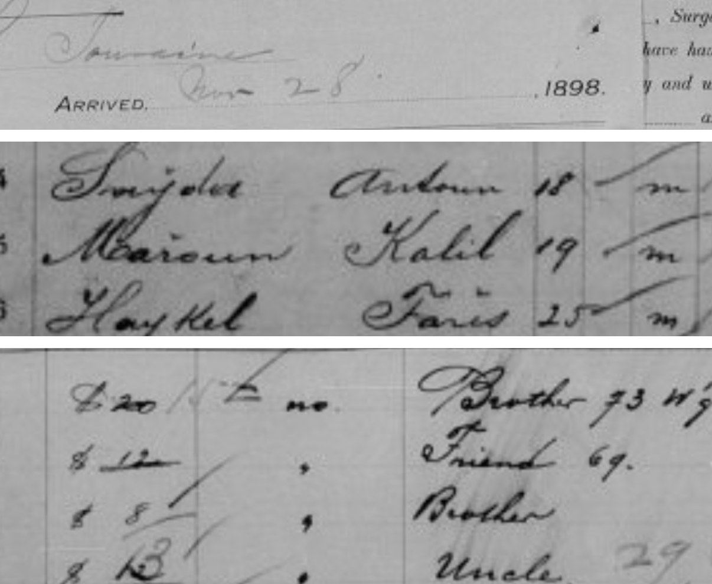
The whole passenger list page around Antoun Smyda, S.S. La Touraine, November 1898. The wider view of the page behind the strip above. The heading reads "S.S. La Touraine sailing from Havre, November ... 1898, arriving at Port of New York." On the line for "Smyda, Antoun," the columns read: age 18, male, single, farmer, able to read, last residence Beyrouth, final destination N.Y., $20 in his possession, never before in the United States, and joining a "Brother, 73 W'g'ton St.", as written on this page. The line just below him is "Maroun, Kalil" (the surname is read as Maroun or Marcun), 19, of Tripoli, a single pioneer, with a "Friend" named in the same column, so Antoon may have crossed with other young men from Lebanon (a question for the family, not yet likely). The surname is hard to read and could be "Smyda" or "Smijda." This is not yet shown to be Antoon's voyage, because his own papers give an arrival date of 25 October 1898, not late November. The blue arrows are part of the website's viewer, not the passenger list.
Source: Passenger passenger list, S.S. La Touraine, Havre to New York, arrived 28 November 1898, sheet 183 (viewer image 318 of 439), Ellis Island records, statueofliberty.org, screenshot taken by Sarah. Name as written: Antoun Smyda.
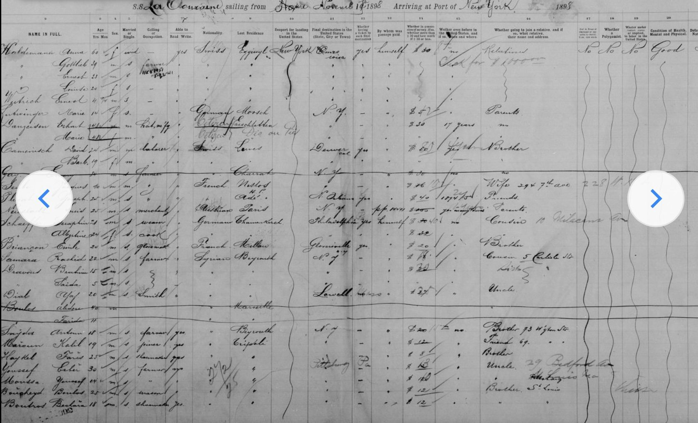
1900 census, Negaunee, Michigan: Antoon, age 19, a boarder. On the Twelfth Census (counted 1 June 1900, Marquette County, City of Negaunee, census district 126, sheet 1A), Antoon is on line 18 as a boarder in the household of Abdalla Kirkish. He is listed as about 19 and single, born in Syria ("Turkey"), immigrated 1898, one year in the United States, working as a seller of goods from house to house. The household also includes Abdalla's wife Sady, their baby son Naseem, and another boarder, Mary Abraham. Sady is probably Antoon's sister Sada (see the Kirkish records). Source: 1900 U.S. census, Negaunee, Marquette County, Michigan, ED 126, sheet 1A, line 18, via FamilySearch (“Marquette, Michigan, United States records,” image 252 of 457, ark:/61903/3:1:S3HT-DC79-7SL). Name as written: Saydah, Anton.
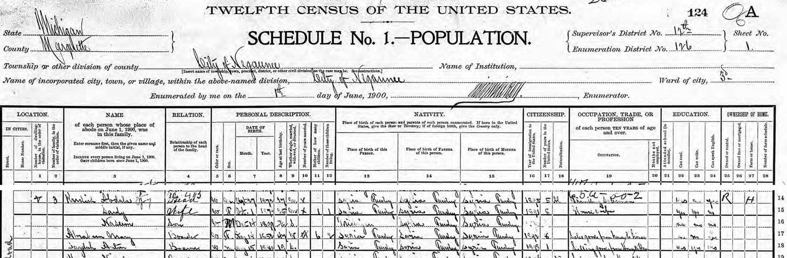
Antoon's declaration of intention (9 November 1909) and petition for naturalization (8 May 1913). On the left, the declaration: Antoon Wahbeh Saydah, 28, a merchant living at 570 48th Street, born in Forzul (written "Forgul" on the declaration), Syria (then Turkey) on 15 August 1881, 5 feet 6 inches and 170 pounds, with black hair, brown eyes and a tattooed cross on his left hand. He says he came from Havre on La Touraine, arriving at New York on or about 25 October 1898. On the right, the petition: now living at 5305 Sixth Avenue with his wife Wassila, and naming his witnesses, Anton Simon and Willard Van Wagner. Source: Declaration of Intention no. 9718 and Petition for Naturalization no. 13556, New York Supreme Court, Kings County, as viewed on FamilySearch. Names as written: Antoon Wahbeh Saydah; born "Forgul"; wife "Wassila"; witnesses Anton Simon and Willard Van Wagner.
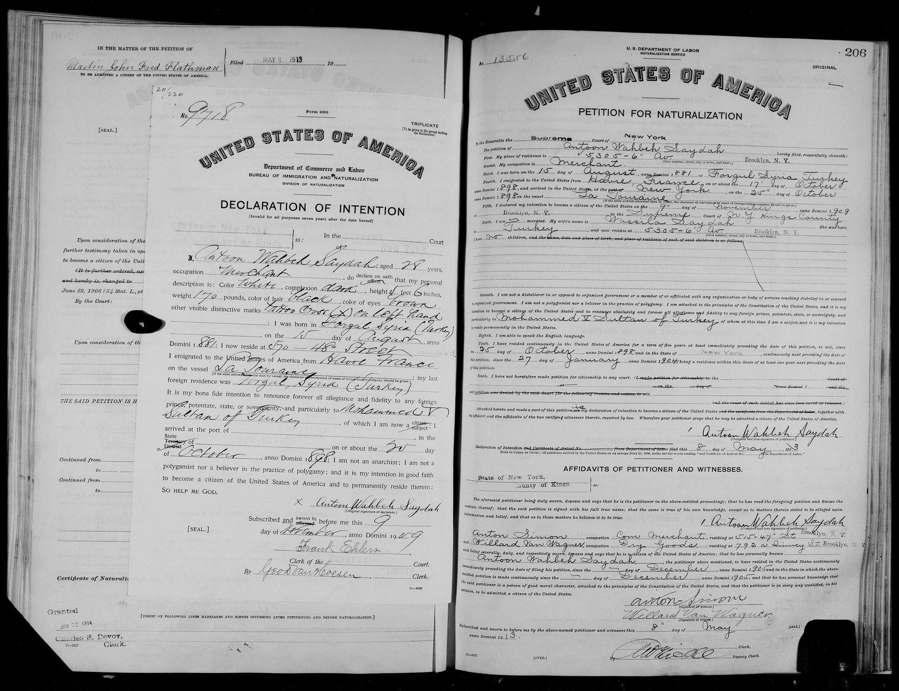
Antoon becomes a citizen, 22 January 1914. His oath of allegiance renouncing the Sultan of Turkey, the court's order admitting him, and the certificate of naturalization (no. 381478, with the last digit written over) issued the same day, with his address, 4721 Sixth Avenue, written at the bottom. A clerk's note at the top of the facing page reads "arrival varies one month," but it belongs to another man's petition (no. 13557), so it tells us nothing about Antoon. The question of his sailing date, 25 October on his papers against 28 November on the ship record we found, is still open in Part Two. Source: Petition for Naturalization no. 13556, New York Supreme Court, Kings County, oath and order, 22 January 1914. As viewed on FamilySearch. Name as written: Antoon Wahbeh Saydah.
Antoon in the 1913 Brooklyn directory. The 1913 Brooklyn directory prints "Saydah Anton W laces h 567 48th", which puts Antoon at 567 48th Street (the "h" stands for home). The same column prints "Kalheel impr h 567 48th", meaning Khaleel, importer, at the same house, so the two brothers were at one address by 1913. That is the year of Antoon's petition (8 May 1913) and a few months before he became a citizen (22 January 1914). "laces" matches his later linens and lace importing.
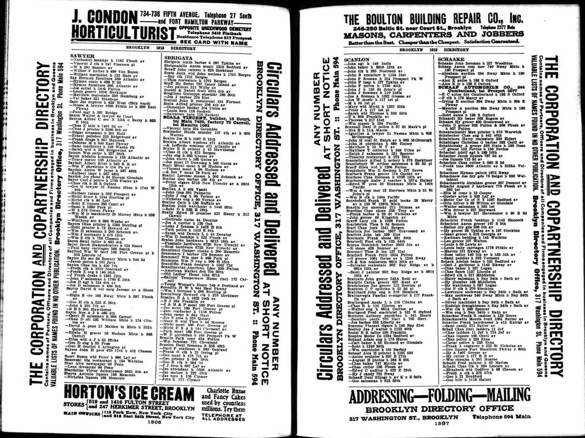
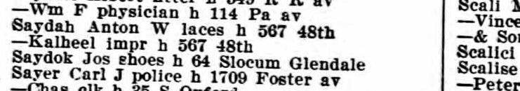
Antoon's draft card, 12 September 1918. For the First World War draft he registered as Antoon Wahbeh Saydah of 4721 Sixth Avenue, a manager at the "Saydah Importer Co." (as we read the handwriting), 85 Washington Street, New York, naturalized, with his wife Wassela as his nearest relative. This card gives his birth as 15 August 1880, a year earlier than his own citizenship papers. Source: U.S. World War I draft registration card, Brooklyn, 12 September 1918. As viewed on FamilySearch. Name as written: Antoon Wahbeh Saydah.
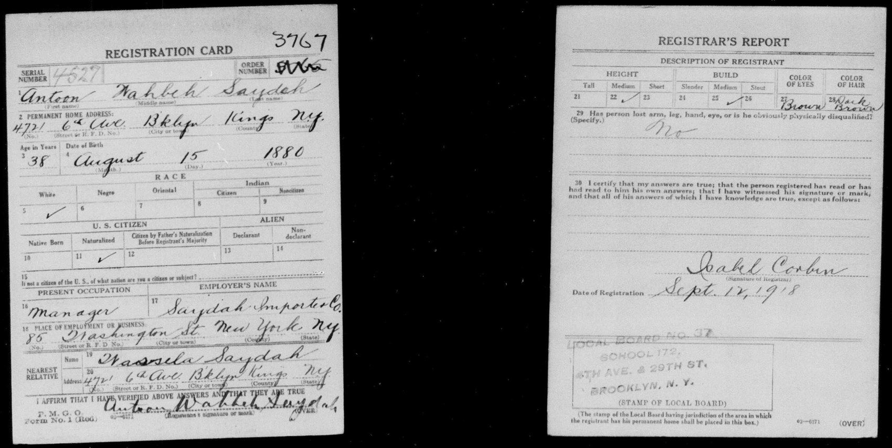
Antoon's 1923 passport application. Application no. 360820, sworn 26 December 1923 and issued 27 December 1923. "Antoon W. Saydah", a naturalized citizen, was born at "Forzul, Syria" on "the 15th day of August, 1881"; his father is "Wahbeh A. Saydah", "Dead". He says he sailed from "Beirut, Syria, about September, 1898", had lived 25 years in the U.S. and became a citizen at Brooklyn "on January 22nd, 1914". He lived at "33-86th St., Brooklyn", was an importer, and planned a year abroad on "Commercial Business" for the Saydah Importing Co., sailing on the S.S. "Lapland" on 16 January 1924. The description gives age 42, 5 feet 6 inches, brown eyes, black hair and a "tatoo cross on left hand" (as printed). The witness is "K. A. Salih", a merchant who has known him "twenty one years". He has the same name as the 1909 Damascus Lodge secretary and as the person who swore a statement in Khaleel's 1920 file. He is probably the same man, but that is not proven.
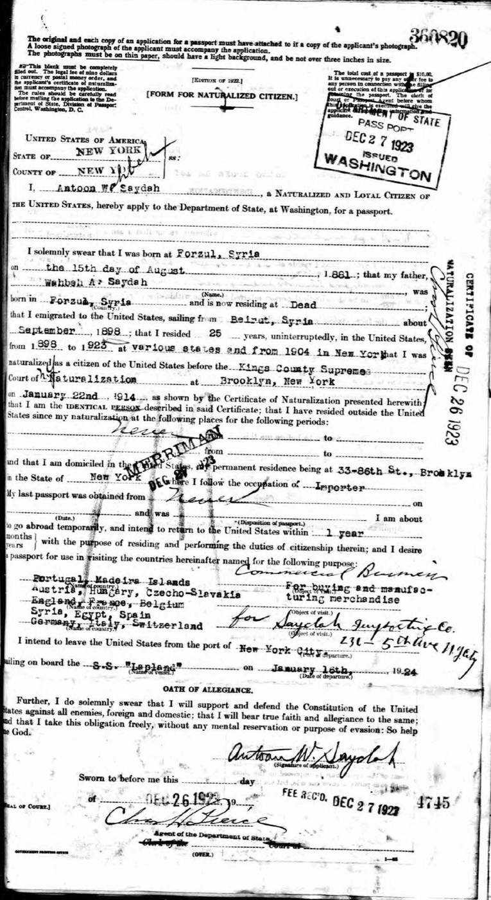
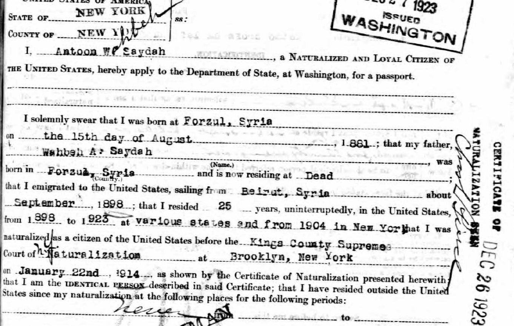
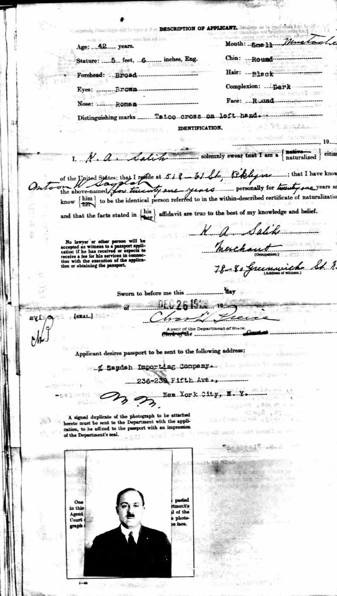
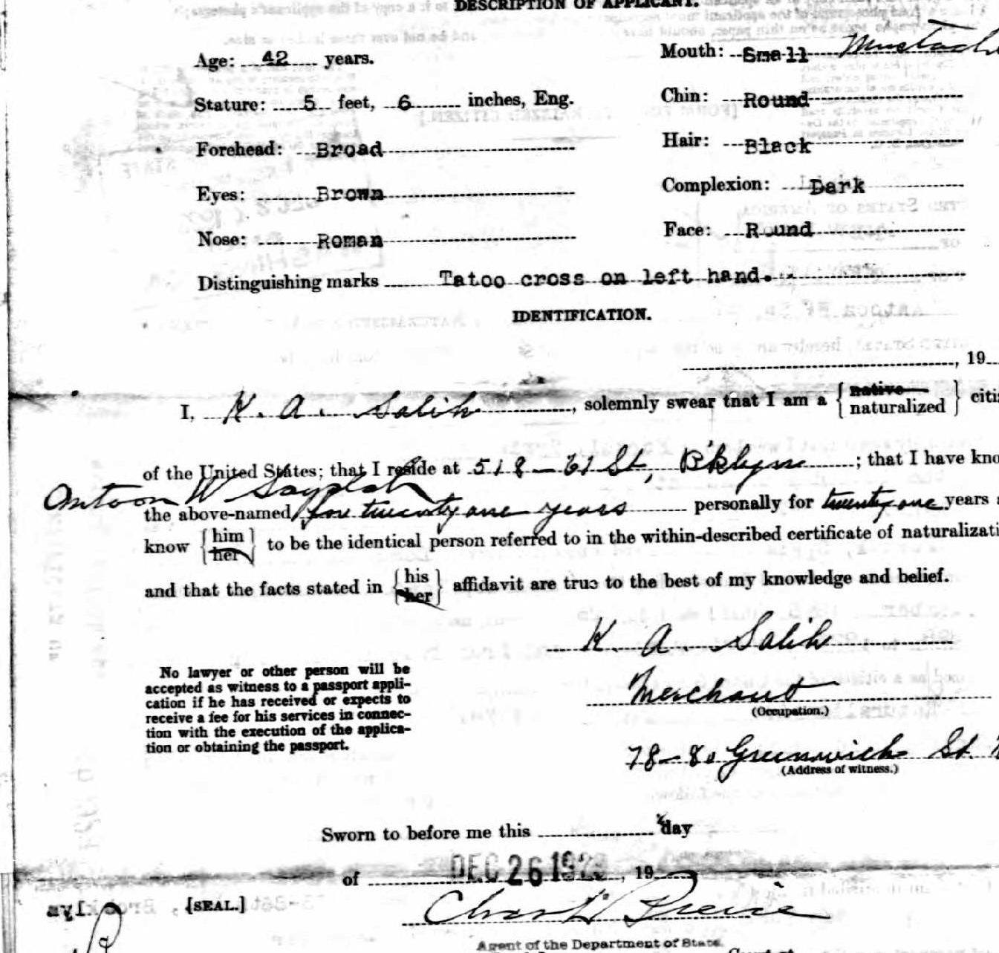
Antoon W. Saydah, 1923. The photograph attached to his passport application no. 360820, sworn 26 December 1923. Source: U.S. passport application, 1923 (Ancestry Library Edition, image 0851). Name as written: Antoon W. Saydah.
Antoon's outward passenger list from Southampton, 11 July 1924 (Arundel Castle). An outbound passenger list: the Union-Castle ship "Arundel Castle", departing "July 11, 1924" from Southampton, bound "S. Africa"; the list is of "Alien passengers". The first-class line reads "Saydah, Mr. Antoon", last address in the United Kingdom "S.W. Hotel, Southampton" (our reading), occupation "Merchant", age 42, citizen of "U.S.A." with "U.S.A." as his intended future home. The port where he planned to land is written "Madr." (our reading). This matches his plan to buy goods in Madeira and other countries for the Saydah Importing Co., and shows he was in Southampton by 11 July 1924.
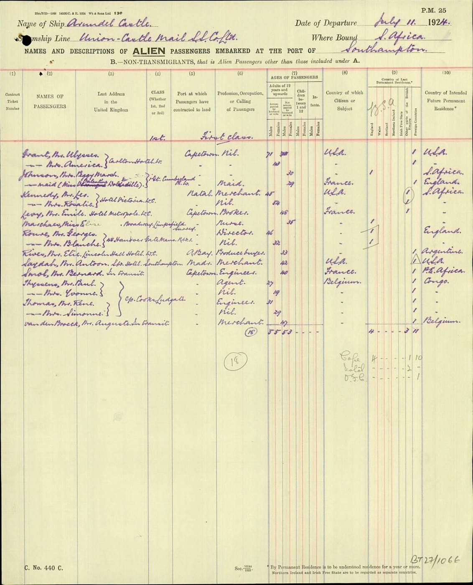
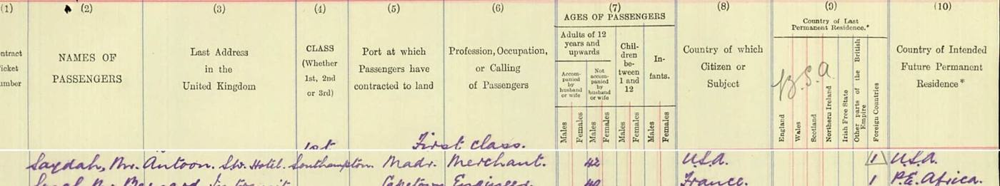
Antoon's incoming passenger list at Southampton, 4 August 1924 (Kildonan Castle, from Madeira). An arriving passenger list: the ship "Kildonan Castle", arriving at Southampton "4 Aug 1924" from "South Africa". On line 86 the port landed is "Madeira" (written in the margin, our reading), with "Saydah, Mr Anton Wahlbeh" (as read), "in transit for U.S.A.", "Mercht" (merchant), age 42, citizen of "U.S.A.". "Wahlbeh" is one more spelling of Wahbeh. Putting the records together by date (this is not from one record), the trip runs: he sailed from New York on 16 January 1924, left Southampton on 11 July 1924 (probably for Madeira), came back to Southampton on 4 August 1924 from the port written "Madeira" (our reading of the margin), and reached New York on 12 August 1924.
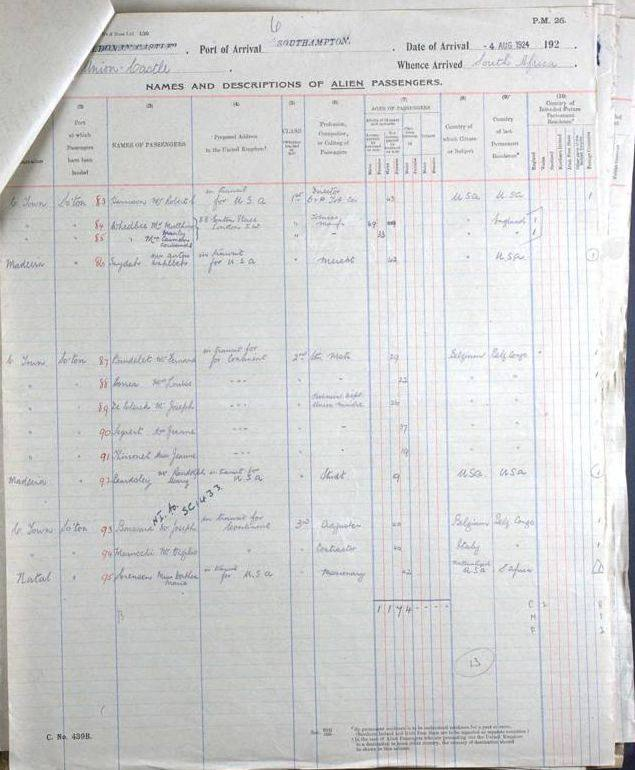
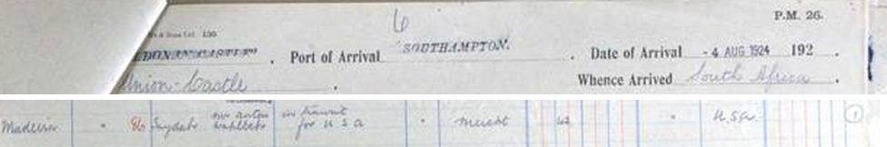
Antoon's return to New York, August 1924 (passenger list). A "List of United States Citizens" for the S.S. "Majestic" (as read), from Southampton, arriving at New York on 12 August 1924. Line 27 reads "Saydah", "Antoon W.", age read as 43, male, married. The naturalization column reads "Jan. 22nd, 1914. Kings Co. New York, N.Y." and the address "33 (as read), 86th St., Brooklyn, N.Y." Two handwritten numbers cover the birthplace column: "360820" (the number of his 1923 passport application) and "423396" (our reading). So he came back after about seven months away.
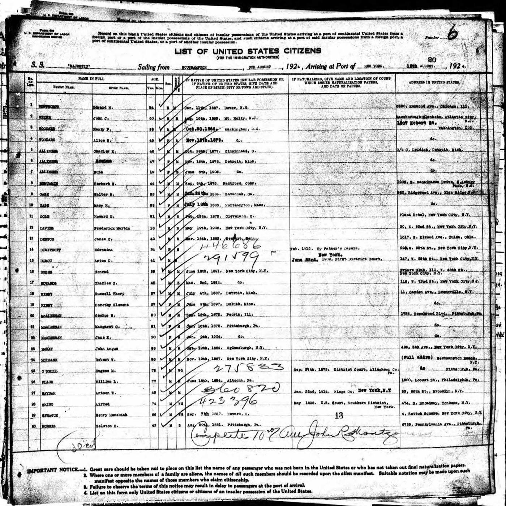
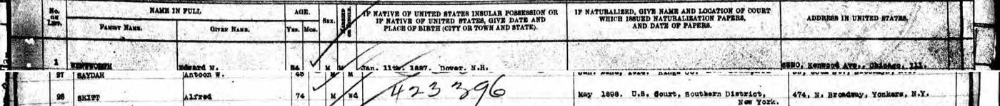
Antoon on the 1924 voter list. The 1924 New York City voter list (a city supplement) names "Saydah, Anton W.", 33 86th St., Brooklyn, 46th Election District. The street address agrees with his 1923 passport application and the 1930 and 1940 censuses. Wassela is not on the list, as indexed.
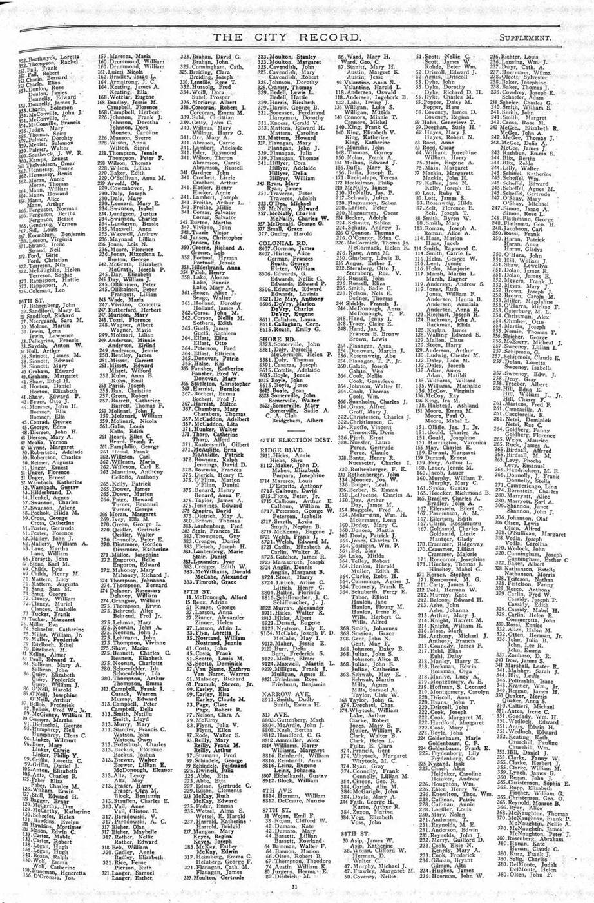
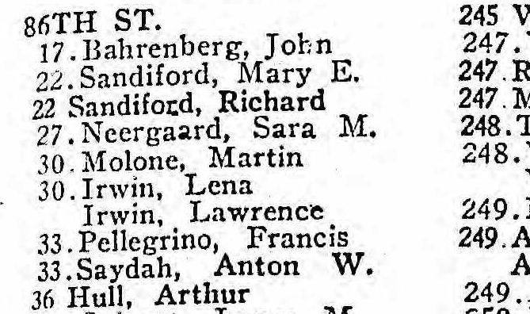
Antoon's draft card, 1942 (front). The "old man's draft" of 1942 registered men born between 1877 and 1897. Antoon, written Antoon W. Saydah, was 61, born 15 August 1881 in Forzul, Syria, living at 33 86th Street and working for the Saydah Importing Co., 236 Fifth Avenue, New York. His wife Wasilla is the person who will always know his address. A note at the bottom says "Arabic signature." Source: U.S. World War II draft registration card (front), Local Board 171, Brooklyn, 1942. As viewed on FamilySearch. Names as written: Antoon W. Saydah; Wasilla (wife).
Antoon's draft card, 1942 (back). The registrar's description: 5 feet 5 inches, 180 pounds, brown eyes and black hair. Registered at Local Board 171, 8410 Third Avenue, Brooklyn. Source: U.S. World War II draft registration card (back), Local Board 171, Brooklyn, 1942. As viewed on FamilySearch. Name as written: Antoon W. Saydah.
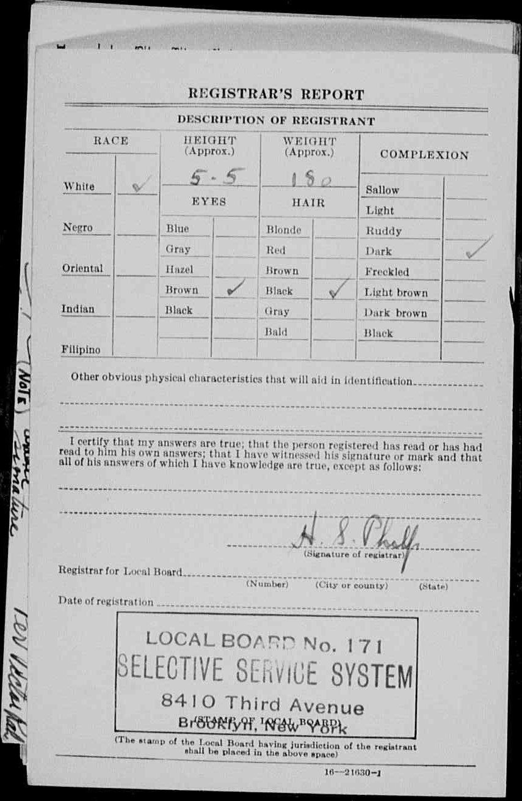
- 15 Aug 1880 or 1881Antoon is born in Forzul
- 25 Oct 1898He arrives in New York, by his own sworn papers
- 1 Jun 1900A boarder in Negaunee, Michigan, selling goods from house to house
- 22 Jan 1914He is sworn in as a citizen in Brooklyn
- 16 Jan 1924He sails for a year of buying trips abroad
- 12 Aug 1924He is back in New York, after seven months
- 1942He registers for the draft at 61
What we foundAntoon’s papers describe the same small mark fourteen years apart: a cross tattooed on his left hand. It is on his declaration of 1909 and again on his passport application of 1923 (as printed: “tatoo cross on left hand”).
“tattoo cross (x) on left hand”Antoon’s declaration of intention, no. 9718, 9 November 1909
On 9 November 1909, in the Supreme Court of Kings County, a merchant named Antoon Wahbeh Saydah described himself for the clerk. He was 28, white, with a dark complexion, five feet six and 170 pounds, with black hair and brown eyes, and “tattoo cross (x) on left hand.” He lived at 570 48th Street, and he signed with an x before his name. In December 1923 he described himself again for a passport clerk, and the cross was still there.
By those same sworn papers he was born in Forzul on 15 August 1881 and left Le Havre on the liner La Touraine about 17 October 1898, reaching New York on 25 October. We have not found his name on that sailing. The one line that may be him is on a La Touraine list marked as arriving on 28 November 1898: “Smyda, Antoun,” 18, single, a farmer who could read, from Beyrouth, with $20 and a “Brother, 73 W’g’ton St.” as his destination. A month apart and a spelling apart, it is not proven, and we treat it as a question for the family. If it is him, the brother is probably Khaleel, who lived at 73 Washington Street in 1900.
The 1900 census finds an Anton Saydah, born 15 August 1880, aged 19 and single, a boarder in Abdalla Kirkish’s household in Negaunee, Michigan, “selling goods from house to house.” The Kirkish wife, Sady, is probably his sister Sada. By April 1910 he was back in Brooklyn, a single man of 29 in his brother Khaleel’s household at 570 48th Street, which is what proves that the two were brothers.
His citizenship papers run from 1909 to 1914. On 8 May 1913 he petitioned as a merchant living at 5305 Sixth Avenue with his wife, Wassila. Two witnesses swore that they had known him in New York State since December 1905: Anton Simon, a commission merchant, and Willard Van Wagner, in dry goods. The petition also says “I have no children.” Their daughter Lily had been born and had died in March 1913, two months before, and we read the line as meaning living children. On 22 January 1914 he took the oath in open court, renouncing the Sultan of Turkey, and was handed certificate no. 381478, with the last digit written over. Written under it is a new address, 4721 Sixth Avenue.
The directories and cards that follow show a working man. The 1913 Brooklyn directory lists him as “laces,” at 567 48th Street, the house where Khaleel, an importer, is listed too. On the draft card he signed on 12 September 1918 he is a manager at the Saydah Importer Co., 85 Washington Street, and his wife Wassela is his nearest relative. That card gives his birth as 15 August 1880, a year earlier than his own citizenship papers.
In December 1923 he applied for a passport “for buying and manufacturing merchandise” for the Saydah Importing Co. across a long list of countries, from Portugal and Madeira to Egypt, Syria and Switzerland, naming his father, Wahbeh A. Saydah, as dead. His photograph is attached to it; he was 42. He sailed on the Lapland on 16 January 1924 for about a year. The passenger lists let us follow part of the trip. On 11 July 1924 he was in Southampton as a first-class passenger on the Arundel Castle, with Madeira as the likely port of call (our reading of an abbreviation). On 4 August a first-class passenger named “Anton Wahlbeh Saydah,” 42, a U.S. merchant, came back to Southampton from a port we read as Madeira on the Kildonan Castle; this is probably him. On 12 August he landed in New York from the Majestic, giving his home as 33 86th Street, Brooklyn. He had been gone about seven months, not a year. His name is also on the 1924 Brooklyn voter list, at 33 86th Street.
The last of his own papers is the draft card of 1942, the “old man’s” registration for men born between 1877 and 1897. He was 61 by its count, living at 33 86th Street and still working for the Saydah Importing Co., at 236 Fifth Avenue. His wife “Wassella” is the person who will always know his address. He signed in English letters, with a handwritten note under the signature line that reads, as we read it, “arabic signature.” The back describes a man of five feet five and 180 pounds.
Still open
His birth year: his sworn papers of 1909, 1913 and 1923 say 15 August 1881. The 1900 census, his 1918 draft card and his passenger list age of 18 say 1880. The 1942 card writes 1881 but gives an age of 61, which fits 1880. The day, 15 August, is the same in every record.
His arrival: 25 October 1898 on his own papers, about September 1898 from Beirut on his passport application, 1900 on the 1930 census, and about 1901 on others. No Ellis Island search has found him, and the La Touraine line of 28 November is only a possible match. A baptism record from Forzul might settle this and his birth year.
His certificate: certificate no. 381478 on his own papers, but the handwritten number 423396 beside his name on the 1924 Majestic list is unexplained.
Forzul or Forgul: the cursive letter in his birthplace is not settled.
Family memory: stories of the voyage, why he left, the cross on his hand, or the trip to Madeira. If you know, please tell Sarah.
Questions for the family
- Does anyone know what took Antoon to Michigan, or who met him in New York?
- Did anyone hear stories of his voyage in 1898, or about the cross on his hand?
- What did he buy on the 1924 trip, and did he talk about Madeira?
- Does anyone know who Anton Simon and Willard Van Wagner, his 1913 witnesses, were?
How we know this
- Antoon’s naturalization papers, 1909 to 1914: declaration no. 9718 (9 November 1909), petition number 13556 (8 May 1913), the oath and order of 22 January 1914 and certificate no. 381478. From the papers themselves.
- The La Touraine passenger list, November 1898: sheet 183, line 24, “Antoun” with a surname we read as Smyda. From the record. Whether it is Antoon is only possible.
- 1900 census, Negaunee, Michigan: “Saydah, Anton,” boarder, age 19. From the record. That Sady Kirkish is his sister is probable.
- The 1913 Brooklyn directory: “Saydah Anton W laces h 567 48th.” From the printed page.
- Antoon’s World War I draft card, 1918: manager, Saydah Importer Co.; born “August 15 1880.” From the card, signed by him.
- Antoon’s passport application, 1923: no. 360820, sworn 26 December 1923, sailing on the Lapland on 16 January 1924. From the record.
- The Arundel Castle passenger list, Southampton, 11 July 1924, and the Kildonan Castle list, 4 August 1924. From the records. Madeira as the destination is our reading of an abbreviation.
- The Majestic passenger list, New York, 12 August 1924, and the 1924 voter list. From the records.
- Antoon’s World War II draft card, 1942: age 61, “8 15 1881,” 33 86th Street. From the card, signed by him.
Antoon and Wassela
Still open in this line ↓Antoon’s pageWassela’s page
Spellings: Wassela is also written Wassila, Wasila and Wasseela, and her family name Hadad, Hodod, Haddad and Hadel. Antoon’s name is written Anton, Antoun and Antone.
Wassela, a studio print. A studio print of Wassela as a young woman, with no date, sent by Jackie (Helen’s daughter) on 14 November 2026. The family says it shows Wassela; it is not a record.

Foreclosure notice naming Antoon, 1910. A legal notice under "County Court, Kings County": "Antoon W. Saydah, plaintiff, against Elizabeth Lyons et al, defendants". A foreclosure sale (a sale of a property because a mortgage was not paid) was ordered by a judgment dated 25 May 1910, to be held at the Brooklyn Real Estate Exchange, 189 Montague Street, on 21 June 1910 at noon. The property is a lot on the north side of Forty-eighth Street, 100 feet west of Sixth Avenue. It shows Antoon as a mortgage holder (the lender) in 1910.
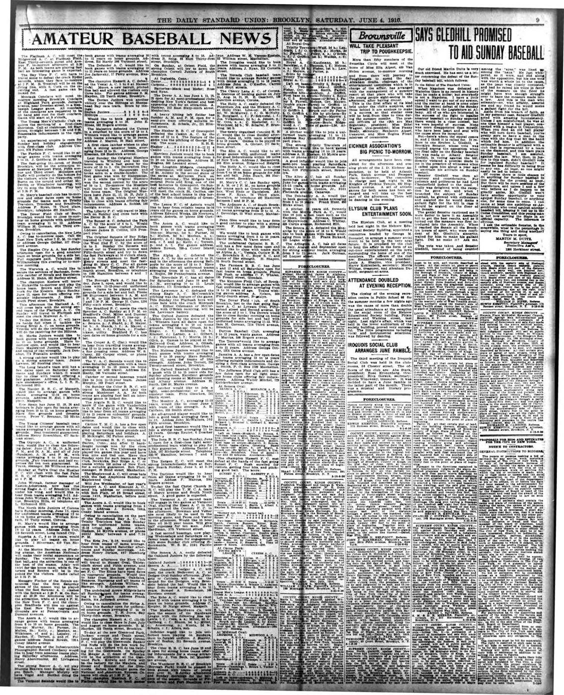
The marriage-license list, Brooklyn Daily Eagle, 1912. In the list of marriage licenses: "Antoon W. Saydah, 31, of 567 48th st, Wassela Hadad, 23, of 391 [or 301] Henry st". The ages and Antoon's address match the marriage certificate and the license index, and the Eagle spells the bride "Hadad", as the index does.
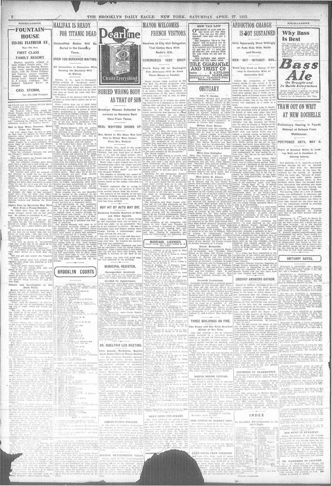
Antoon and Wassela's marriage certificate, May 1912 (with their signatures). Antoon W. Saydah, 31, a merchant living at 567-48th Street, Brooklyn, born in Furzol (Forzul), Syria, son of Wahbah Saydah and Noor Jereisaty (our reading), and Wassela Hodod, 23, of 301 Henry Street, born in Zahleh, daughter of John Hodod and Amina Shehadi, were married in the Church of the Holy Trinity, Brooklyn, in May 1912 (the day reads "5th"; the Bureau of Records stamped the certificate received on 14 May 1912) by Waldo A. Amos, associate rector, of 157 Montague Street. Both were single and it was a first marriage for each. The witnesses were Maheeba Fulaihan and Khaleel W. Saydah, who signed the lower page with the couple. Source: Certificate and Record of Marriage no. 4287, Brooklyn, New York City, May 1912 (front and signature page). As viewed on FamilySearch. Names as written: Antoon W. Saydah, Wassela Hodod (Hadad on the signature page), Khaleel W. Saydah.
Lily Saydah, born and died, March 1913. “Lily Saydah,” born 5 March 1913, died 8 March 1913 at 5305 Sixth Avenue, aged 3 days, of atelectasis (the lungs had not fully opened), born prematurely between the sixth and seventh month. Father “Anton Saydah,” mother “Wassila Haddad,” both born Syria; physician “R. G. Haddad,” 56 Garden Place; buried at Mount Olivet Cemetery on 10 March 1913. Source: Standard Certificate of Death no. 5222, Brooklyn, New York City, 8 March 1913. As viewed on FamilySearch.
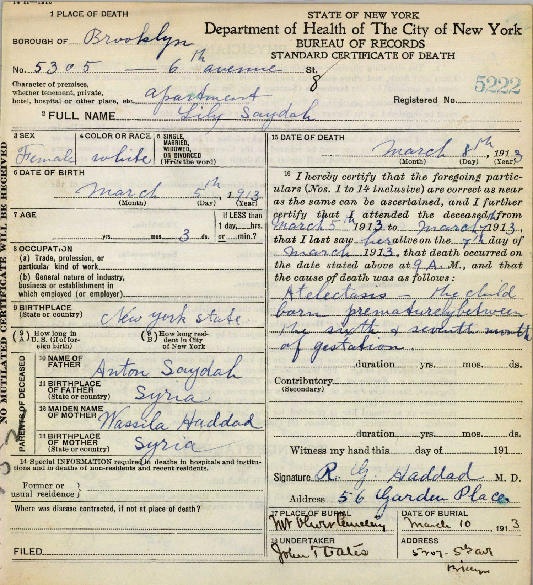
1915 state census, Antoon and Wassela. The household of Antoon and Wassela in the 1915 census, Brooklyn (the headings and the household lines, then the whole page).
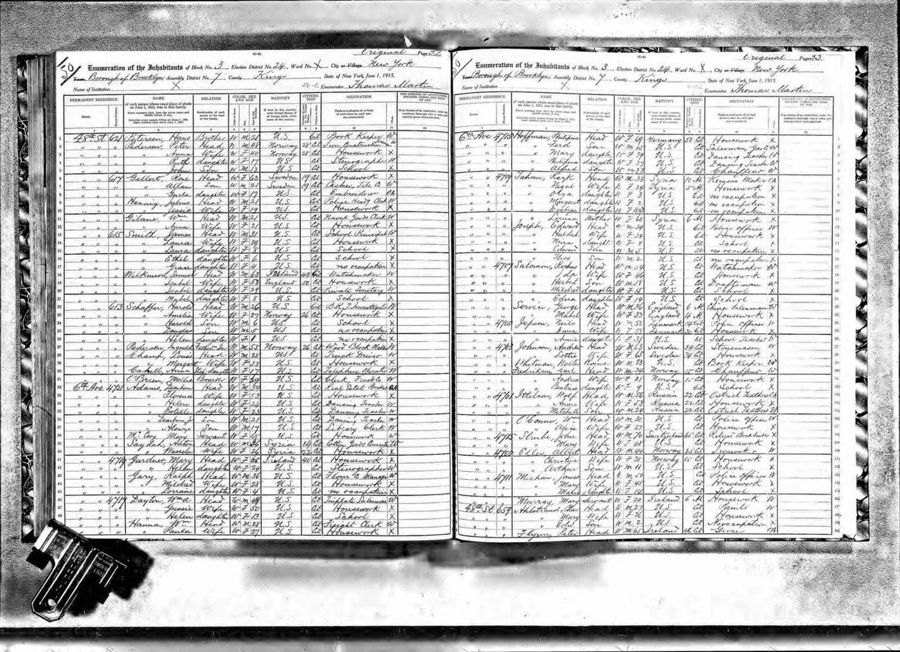
The 1916 deed index line. An entry in the Kings County (Brooklyn) deed index for 15 August 1916 lists "Irwin, Ellen" as the buyer (grantee) and "Anton W. Saydah" as the seller (grantor), deed book (Liber) 3605, page 309 (as read). That points to a sale recorded that day (the recording date, not necessarily the date of the deed). The deed itself is not in hand.
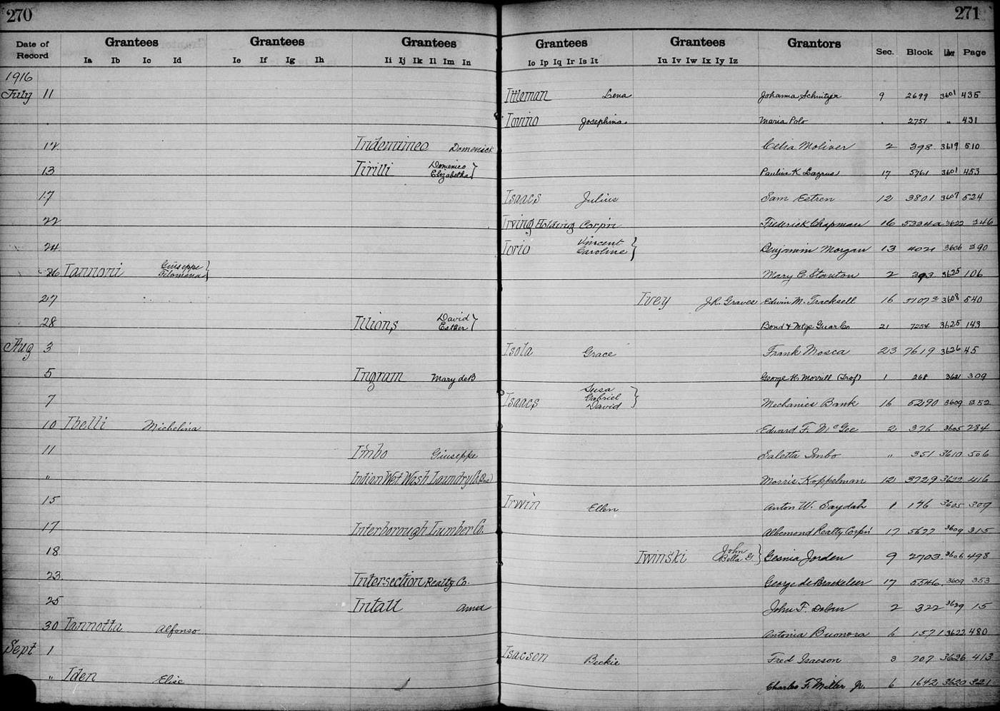
1920 census, the Saydah household. The household of Antoon and Wassela in the 1920 census, Brooklyn (the headings and the household lines, then the whole page).
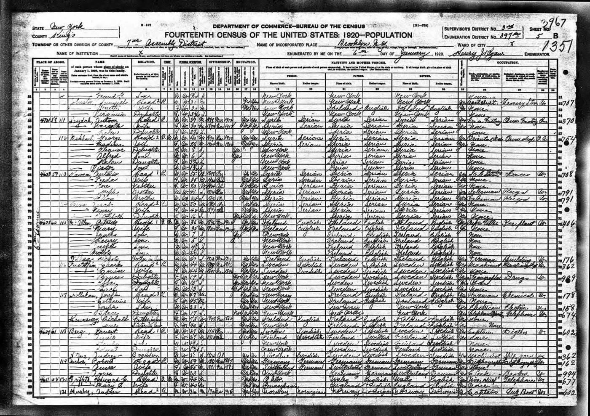
1925 state census, the Saydah household. The household of Antoon and Wassela in the 1925 census, Brooklyn (the headings and the household lines, then the whole page).
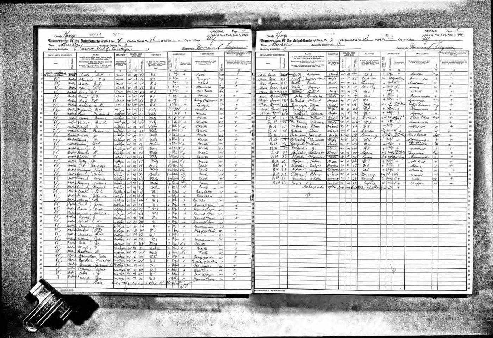
Antoon, from the family portrait. Antoon, cropped from the studio portrait of Antoon, Wassela and their three daughters (shown whole in Three daughters). The print has no date; the girls look about 3 to 8 years old, which suggests about 1925 to 1927. The family says this is Antoon; no record names him beside the face.
Wassela, from the family portrait. Wassela, cropped from the studio portrait of Antoon, Wassela and their three daughters (shown whole in Three daughters). The print has no date. The family says this is Wassela; no record names her beside the face.
1930 census, the Saydah household. The household of Antoon and Wassela in the 1930 census, Brooklyn (the headings and the household lines, then the whole page).
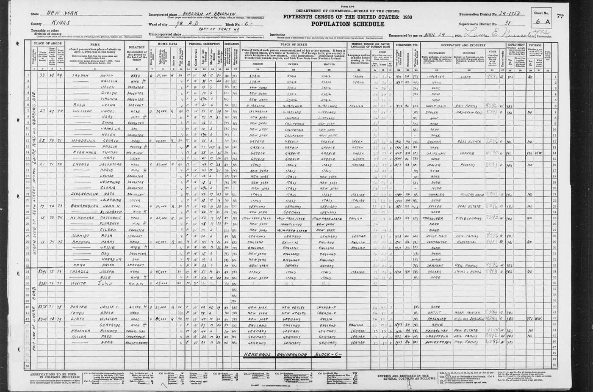
1940 census, the Saydah household. The household of Antoon and Wassela in the 1940 census, Brooklyn (the headings and the household lines, then the whole page).
New Jersey death index line for Wassela, 1969. The index lists "Wasella Saydah", died "6 Jan 1969", at "Englewood, Bergen, New Jersey", with no age, birth date or parents. Englewood is a new detail for her death place. The date matches the newspaper obituary index.
- 26 Feb 1911The engagement, as Al-Hoda reports it
- 5 May 1912The wedding at Holy Trinity Church, Brooklyn
- 5–8 Mar 1913Lily lives three days
- 1 Jun 1915The first census that counts them together
- Jan 1969Wassela dies, by two index lines
What we foundWassela’s own hand shows her name. The clerk wrote “Hodod” at the top of the marriage certificate, but on the signature page the bride signs “Wassela Hadad.”
“we congratulate them and pray for them the completion of joys”Al-Hoda, 1 March 1911, p.3, announcing the engagement (our translation, to be confirmed by a native reader)
The first we hear of them as a couple is a line in a New York Arabic newspaper. Al-Hoda reported on 1 March 1911 that “the betrothal of Khawaja Antun Wahbeh Sayyida to Miss Wasila Hanna al-Haddad, of Mu’allaqat Zahle” had been held in New York on Sunday, 26 February (our translation, to be confirmed by a native reader). The wedding followed fourteen months later.
By then Antoon was a man with business of his own. In June 1910 a Brooklyn paper listed “Antoon W. Saydah, plaintiff” in a foreclosure sale on Forty-eighth Street, which suggests he held a mortgage on a lot there. The license list in the Brooklyn Daily Eagle of 27 April 1912 gives the two of them as “Antoon W. Saydah, 31, of 567 48th st” and “Wassela Hadad, 23,” of Henry Street (the house number is blurred in print; the certificate has 301).
Four days before the wedding, Mira’at al-Gharb printed the invitation. The paper had received word of the wedding of “Antoun Effendi Sayyida” and “Miss Wasila, daughter of Khawaja Hanna al-Haddad,” at 3:30 on “Sunday next” in the Episcopal Trinity Church at the corner of Montague and Clinton streets (our translation, to be confirmed by a native reader). The certificate gives her father as John. We take Hanna and John to be one name, but that is not proven.
They were married on Sunday, 5 May 1912, at the Church of the Holy Trinity in Brooklyn. The certificate says Antoon, 31, a merchant of 567 48th Street, was born in “Furzol, Syria,” and that Wassela, 23, of 301 Henry Street, was born in “Zahleh.” His parents are written “Wahbah Saydah” and “Noor Jereisaty,” hers “John Hodod” and “Amina Shehadi.” It was the first marriage for both. Their witnesses were “Maheeba Fuleihan” (as we read it) and Antoon’s brother Khaleel, and the Bureau of Records stamped the paper received nine days later, on 14 May. A cousin of Antoon’s, Michael Butrus Kirkish of Ishpeming, Michigan, sent his congratulations to the Arabic paper Jurab al-Kurdy on 9 May (the date is the archive’s; the page prints none; our reading of the signature and translation); how the Kirkish family was related is a question for the family.
Their first child, Lily, was born on 5 March 1913 and lived three days. Her death certificate gives the address 5305 Sixth Avenue, where the family lived that spring, and says she was born between the sixth and seventh month and died of atelectasis, the lungs not having fully opened. The physician is written “R. G. Haddad,” of 56 Garden Place. Lily was buried at Mount Olivet Cemetery on 10 March 1913.
The censuses then follow the household. In June 1915 the state census has “Saydah, Anton,” 36, a cotton goods converter, with his wife Wassela, 26. In January 1920 they are counted with Helen, almost three. By June 1925 the household at 33 86th Street has three daughters, Helen, Evelyn and Virginia, and by April 1930 it is a house they own, with Antoon an importer of linen. In 1940 he is still a store owner in “imported linens,” with Wassela and Helen, 22, at home. In 1916 Antoon sold property to a buyer named Ellen Irwin, as a line in the Kings County deed index shows; the index points to the deed, which we have not yet seen.
Wassela outlived Antoon by almost twenty years. We hold no certificate for her death, only index lines. A newspaper index lists her obituary in The Record of Hackensack on 8 January 1969, and the New Jersey death index gives 6 January 1969 at Englewood; the Social Security index says December 1968.
Still open
Wassela’s birth year. The marriage certificate (age 23) points to about 1889, the 1900 census line says May 1886, later censuses run to about 1892 or 1893, and the Social Security index gives 20 December 1889. Her 1969 death certificate may state it.
Antoon’s age. The marriage certificate (31) puts his birth about 1880 or 1881, and the censuses spread from about 1879 to 1882.
The date of Wassela’s death: 6 January 1969 by the two index lines, December 1968 by the Social Security index.
Holy Trinity Church’s 1912 register, and Mount Olivet’s lot records for Lily, are not yet seen.
Family memory: how Antoon and Wassela met, the wedding day, or Lily. If you know, please tell Sarah.
Questions for the family
- Does anyone know how Antoon and Wassela met, and whether Khaleel’s years in Zahle played a part?
- Who were Maheeba Fuleihan, their witness, and Dr. R. G. Haddad, who signed Lily’s certificate? Were they relatives?
- Does anyone know where Lily’s grave lies, and who bought the lot at Mount Olivet?
- Does anyone know Wassela’s birth date, or where she was born?
How we know this
- Al-Hoda, 1 March 1911, p.3: the engagement. From the paper; our translation, to be confirmed by a native reader.
- Daily Standard Union, 4 June 1910, p.9: the foreclosure notice. From the printed page.
- The 1912 marriage-license index line, license no. 4701. An index line, which points to the record but is not the record.
- Brooklyn Daily Eagle, 27 April 1912, p.2: the license list. From the printed page.
- Mira’at al-Gharb, 1 May 1912, p.3: the wedding invitation. From the paper; our translation, to be confirmed by a native reader.
- The marriage certificate, no. 4287, 5 May 1912. From the record.
- Jurab al-Kurdy, 9 May 1912, p.3: a cousin’s congratulations. From the paper; our translation, to be confirmed by a native reader.
- Lily’s death certificate, no. 5222, 1913. From the record.
- The censuses of 1915, 1920, 1925, 1930 and 1940. From the records; ages and figures as read.
- Kings County deed index, 15 August 1916. An index line; the deed itself is not in hand.
- The obituary index line for Wassela, 1969, and the New Jersey death index line. Index lines, which point to the records but are not the records.
Wassela's family: the Hadads (Hodod) and the Shehadis
Still open in this line ↓Hanna’s pageAmina’s page
Spellings: Hadad is also written Haddad, Hodod, Hadel and Hadded, and Shehadi is written Shahady, Shehady and Shehad. Hanna is the Arabic form of John; Wassela’s father is “John” in American records and “Hanna” in the Arabic papers.
The 1898 directory line for John, grocer. The 1898 directory (Trow's, p.525) lists "John, grocer, 77 Washn. h 73 Washn.". 73 Washington Street is also Khaleel's 1900 address, but that is a coincidence of number only.
1900 census, the Hadad household. The head is "Shehady, Beshara", born March 1870, an importer who came in 1898 (the last digit of the year looks written over, but the years-in-the-United-States column reads 2, which agrees with 1898). With him: "Haddad, Emmel", sister, born June 1865, 8 children born and 5 living, immigrated 1892; "John", brother-in-law, born March 1850, unemployed 12 months; "Salem", nephew, born January 1884, salesman; "Halen", nephew, born March 1888, at school; "Wassilla", niece, born May 1886, age 14, saleswoman; and "Najeeb", nephew, born October 1896 in New York.
Death certificate of Helen Hadad, 1908. "Helen Hadad", a girl aged 3, single, born in the U.S., died 21 April 1908 at about 12:45 at the Kingston Avenue Hospital for Contagious Diseases, of diphtheria croup and bronchial pneumonia. Her father is "John Hadad", born Syria; her mother's maiden name is "Emmenie Shehad", born Syria. Former residence 4812 6th Ave. She was buried at Mount Olivet Cemetery on 23 April 1908 (undertaker John T. Oates, 5207 5th Ave). The parents are strongly probably John and Amina Shehadi. A ninth child born about 1904 to 1905 would match the census counts (8 children born in 1900, 9 in 1910).
1910 census, the Hadel household. The household reads: John 65, Ameeny 45, Salim 24, Wassela 20, Charles 18, and Najib 13 (born New York).
Salim Hadad is shot, January 1913. Brooklyn Times Union, 2 January 1913, p.3 ("Seven Shooting Affrays"): "Salim Hadad, 26 years old, of 104 Atlantic avenue, and Michael" Sus[s]ack (surname heavily inked, our reading uncertain), "35 years old, of 324 Livingston street, quarreled at the corner of Atlantic avenue and Henry street last night, and the former was shot in the left shoulder. Hadad was given medical attention and sent home. His assailant was locked up at the Amity street station." Henry Street is also the street of Hanna's house at 301 Henry Street, so it stays probable that this Salim is Wassela's brother.
John Hadad dies at Clifton Springs, 1913. Syracuse Post-Standard, 13 October 1913, p.6 ("John Hadad, Ill 18 Months, Dies at Clifton Springs"): "John Hadad, 68" (the age digits are blurred; 68 is our reading, which agrees with both Arabic notices), "of Brooklyn, a brother-in-law of Michel and Joseph Shehadi of this city, died Saturday at Clifton Springs, where he had been for his health for eighteen months. The body arrived here last night in charge of Undertaker William A. Fancher. The funeral will be held at 2 o'clock this afternoon at the Church of the Savior, with burial at Morningside Cemetery." A stamped logo hides part of the saved image, so only "Mornin" is readable, and "Morningside Cemetery", "2 o'clock", "of the Savior" and the widow's name "Amina Hadad" (only "Mrs. A" is readable) are our readings. Three sons are listed, beginning "Salem," but the other names cannot be read. 11 October 1913 was a Saturday and 13 October a Monday.
The 1913 death index line for John Hadad. The record index prints "Name: John Hadad", "Death Date: 11 Oct 1913", "Death Place: Willard, New York, USA", "Certificate Number: 50442"; the printed index page reads "Hadad / John / 11 Oct / Willard / 50442" (that page is blurred). The death date fits the notices of 13 and 14 October 1913; the place "Willard" is not Clifton Springs, where those notices say he died. The index gives no age, parents or spouse, so that this is our John (Hanna) Haddad is only probable.
The 1955 death index line for Nagib Haddad. The typed ledger reads "HADDAD, NAGIB", place of death Watertown, age 60, month 7, day 8, certificate no. 44111. The year 1955 and the birth year 1895 come from the Ancestry index line, not the ledger. It matches the Syracuse "Najib Haddad" on the day and place of death (8 July 1955, Watertown). Age 60 would match a birth on 17 February or 17 March 1895, but not 13 October 1896 (that would make him 58). Whether he is our Najib stays only probable. The next row, "HADDAD, WHADEE", Yonkers, is another man with no known link to this family.
The January 1898 Ellis Island card for “Wassilah Hadad”. The ship's passenger list (List 2) reads "Nadra Hadad", 17, male, single, and "Wassilah Hadad", 10, female, single; last residence Tripoli; her passage paid by "his brother"; both joining "His cousin Amin, 98 Washington Street at New York". Another hand has also written "89 Washington St." across the same column. The index card itself reads "89 Washington St." (faint; dated "1-7-1898", "Accompanied by NADRA").
- 1892The censuses say both parents had arrived
- 1900The family on DeGraw Street, Brooklyn
- 21 Apr 1908A little Helen Hadad dies
- 2 Jan 1913Salim is shot in the shoulder
- 11 Oct 1913Hanna dies at Clifton Springs
What we foundHanna Hadad died in upstate New York and was taken to Syracuse for his funeral, and the Find a Grave page, which points to a record without being one, says he lies there in a grave with no marker. We do not yet know why Syracuse.
“father of the virtuous lady, wife of Anton Effendi Saydah”Mira’at al-Gharb, 14 October 1913, p.2, on the death of Hanna al-Haddad (our translation, to be confirmed by a native reader)
Wassela’s parents were Hanna and Amina. Her marriage certificate gives them as “John Hodod” and “Amina Shehadi,” while the Arabic papers call him “Hanna al-Haddad” of Mu’allaqa, Zahle, which is the way we take Hanna and John to be one name. The 1900 census gives his birth as March 1850 and says he had been out of work for twelve months; in 1910 he is 65. Amina appears as “Emmel” in 1900, born June 1865, with eight children born and five living, and as “Ameeny,” 45, in 1910. The censuses give 1892 as the year they arrived.
In 1900 the family was living on DeGraw Street in Brooklyn, in the household of “Shehady, Beshara,” an importer born in March 1870. The census calls Amina his sister and John his brother-in-law, which is the first place we see her family name. With them are “Salem,” 16, a salesman; “Halen,” 12; “Wassilla,” 14, a saleswoman; and “Najeeb,” born in New York in October 1896. By 1910 the household is “John 65, Ameeny 45, Salim 24, Wassela 20, Charles 18 and Najib 13.” A New York City births index line gives a “Nageeb Hadded,” born 13 October 1896 to “John Hadded” and “Ameene Shadey Hadded,” which probably is Najib; the index points to the certificate, which we have not seen. A grocer named “John” appears in an 1898 Brooklyn directory at 77 Washington Street. Whether he is Wassela’s father is a question for the family.
The family’s losses show up in the papers. A death certificate for “Helen Hadad,” aged three, records that she died on 21 April 1908 of diphtheria croup in the Kingston Avenue hospital, and gives her father as “John Hadad” and her mother’s maiden name as “Emmenie Shehad.” She was buried at Mount Olivet Cemetery on 23 April. She is probably Wassela’s little sister, and a ninth child fits the census counts. The Arabic paper Al-Kalemat reported on 1 May 1908 the death of “Helena, aged two, daughter of Hanna al-Haddad of Mu’allaqa, Zahle” (our translation, to be confirmed by a native reader). The Arabic page prints “12 April” for the funeral prayer, which is not the 21 April of the certificate. Wassela’s own daughter Helen, born in 1917, may have been named for her.
In November 1911 the Arabic paper Mira’at al-Gharb said that a church choir would meet at the home of “Khawaja Hanna al-Haddad, No. 301 Henry Street, Brooklyn” (our translation, to be confirmed by a native reader). The marriage certificate of the next May gives 301 Henry Street as Wassela’s address, so this is probably her father’s house. On New Year’s night 1913, a “Salim Hadad, 26 years old, of 104 Atlantic avenue,” was shot in the left shoulder at the corner of Atlantic Avenue and Henry Street after a quarrel, was treated and sent home, and the other man was locked up. The Arabic paper As-Sayeh tells it as a quarrel in his shop. That he is Wassela’s brother is probable, since Henry Street fits; the paper makes him 26, the 1910 census points to 26 or 27 and the 1900 census to 28 or 29.
That October, Hanna died. The Syracuse Post-Standard of 13 October 1913 reports that “John Hadad,” 68, of Brooklyn, “a brother-in-law of Michel and Joseph Shehadi of this city,” died on Saturday at Clifton Springs, where he had been for his health for eighteen months, and that the funeral would be that afternoon at the Church of the Savior in Syracuse. The Arabic papers agree on the place and the funeral. Mira’at al-Gharb of 14 October names his son-in-law as Anton Effendi Saydah, Al-Hoda of 17 October names “his son-in-law Antun Effendi Sayyida,” and the notice of 18 October counts among the mourners his widow and his sons “Salim, Khalil and Najib” (our translation, to be confirmed by a native reader). The Shehadis were two Syracuse merchants. The two Arabic notices disagree on whether they were his brothers-in-law or his “cousins,” and we lean toward brothers-in-law, so that they would be Amina’s brothers. The Shehadi newspapers and censuses we hold are on the Documents page.
The records place his death on Saturday, 11 October 1913. A New York State death index line for “John Hadad” has that date, with the place “Willard” instead of Clifton Springs, and Find a Grave has a memorial for a John Hadad at Oakwood Cemetery in Syracuse, in a plot with no grave marker. Both are leads to a record rather than the record itself.
Still open
Where Hanna died and where he lies. The papers say Clifton Springs, the death index says “Willard,” the Post-Standard names a cemetery of which only “Mornin…” can be read in our copy, and Find a Grave says Oakwood. Hanna’s death certificate, number 50442, may settle it.
How long Hanna was at Clifton Springs: eighteen months by the Post-Standard, eight months by the Arabic letter of 18 October.
How the Shehadis were related to Hanna: brothers-in-law in two notices, “cousins” in the third.
Which son-in-law the Arabic letter of 18 October means by “Amin Sayda,” and who “Khalil” was, since no census lists a son by that name.
Salim’s age, 26 in the paper, 26 or 27 in the 1910 census and 28 or 29 in the 1900 census, and the date of the funeral prayer for little Helen.
Whether the 1898 ship card for “Wassilah Hadad” is Wassela, or another girl. It says Tripoli, not Zahle, and the censuses put the family here since 1892.
Whether the Najib Haddad who died in Watertown in July 1955 and is buried at Oakwood in Syracuse is Wassela’s brother, which is only probable, since his birth date differs from the index and the 1900 census.
Family memory: Hanna and Amina, Salim, Charles and Najib, or why Hanna was buried in Syracuse. If you know, please tell Sarah.
Questions for the family
- Does anyone know why Hanna was buried in Syracuse and not in Brooklyn?
- What became of Wassela’s brothers, and who was Khalil?
- Was Wassela’s daughter Helen named for the little girl who died in 1908?
- Do you know whether Hanna ran a grocery on Washington Street?
How we know this
- Trow’s Brooklyn directory, 1898, p.525 From the printed page.
- The 1900 census, DeGraw Street, Brooklyn From the record; ages and dates as read.
- The 1910 census, Brooklyn From the record; ages as read.
- The January 1898 Ellis Island card and ship’s list From the record; probably a different girl.
- The New York City births index line for “Nageeb Hadded,” 1896 An index line, which points to the record but is not the record.
- Death certificate of Helen Hadad, no. 8228, 1908 From the record.
- Al-Kalemat, 1 May 1908 From the paper; our translation, to be confirmed by a native reader.
- Mira’at al-Gharb, 15 November 1911, p.3: the choir notice From the paper; our translation, to be confirmed by a native reader.
- Brooklyn Daily Standard Union, 2 January 1913, p.3 and As-Sayeh, 2 January 1913, p.14 From the papers; the Arabic is our translation, to be confirmed by a native reader.
- Mira’at al-Gharb, 14 October 1913, Al-Hoda, 17 October 1913 and Mira’at al-Gharb, 18 October 1913 From the papers; our translation, to be confirmed by a native reader.
- Syracuse Post-Standard, 13 October 1913, p.6 From the printed page.
- The New York State death index line for John Hadad, 1913 and the Find a Grave page Index lines, which point to records but are not the records.
- The Find a Grave and Social Security lines for Najib Haddad, 1895 to 1955 and the 1955 death index line Index lines; that he is Wassela’s brother is only probable.
- The Shehadi papers from Syracuse and Clifton Springs: record 1, record 2, record 3, record 4, record 5, record 6, record 7, record 8, record 9, record 10, record 11, record 12, record 13, record 14, record 15, record 16, record 17 Newspapers, censuses and naturalization papers, from the records; background on the Shehadi relatives.
The Tuxedo Park accident, 1916
Names: the widow’s first name is printed Affife, Affie, Affifa and Affifi in different papers. Antoon is “Anton W. Saydah” in the English papers and “Antoon Sayda” in the Arabic ones.
The crash, as the Daily Times told it. As printed. Under "Dies in Crash: Syrian Merchant in Auto Wreck at Tuxedo," the paper says Najib Shaheen Maloof, of 4616 Sixth Avenue, was killed "yesterday" (Tuesday 5 September) near Tuxedo, N.Y., while riding with friends from his summer home at Milford, Pa. The car overturned against a fence, he was thrown out, and he died an hour later in Tuxedo Hospital of a fractured skull. Two Brooklyn men in the car were slightly hurt.
He was born in Zahleh, Syria, came to Brooklyn twenty-five years earlier, and imported lace from an office at 31 Rector Street, Manhattan. He was president of the Syrian Relief Committee and a leader in the plan for a Syrian Catholic church on Pacific Street. He left his wife Afefy, a daughter, Victoria, two sons, James and Albert, and brothers in Australia and Syria. The article does not name Antoon or the driver. Zahle was also the Hadad family's home town; whether the two families knew each other from there is not shown.
Source: The Brooklyn Daily Times, 6 September 1916, page 8 (only the article is shown). Spelling used: Maloof.
Maloof's funeral, as the Eagle told it. As printed. Under "Syrian Funeral Here: Special Services for Najib Maloof, Killed in Auto Smash," the Eagle calls Najib Shaheen Maloof, 52, of 4616 Sixth Avenue, a prominent member of the Syrian colony, and says he was killed Tuesday at Tuxedo, N.Y., on his way from his summer home at Milford, Pa., when the car he was riding in overturned against a fence while trying to avoid another car.
The part pictured does not name the driver or Antoon. The rest of the article is in our saved copy.
Source: Brooklyn Daily Eagle, 7 September 1916, page 3 (only the start of the article is shown). Spelling used: Maloof.
The car crash verdict against Antoon, 24 June 1918. Headed "Gets $17,500 Verdict." A jury before Justice Cropsey in the Supreme Court awarded Mrs. Affie N. Maloof $17,500 for the death of her husband, Najib S. Maloof, killed in an automobile accident at Tuxedo Park, N.Y., "about a year ago" (the crash was on 5 September 1916). The verdict was directed against Anton W. Saydah, "an importer and a lifelong friend of Maloof." Maloof was riding as a guest on a trip from Pennsylvania to Brooklyn when the car, with Saydah at the wheel, crashed into a fence and he was thrown out and killed. This is the account behind the Tuxedo Park story in Part Two. The Arabic papers of September 1916 say Khaleel was driving, so the driver is unsettled, and the Eagle of 14 December 1918 reports that the verdict was reversed and a new trial ordered (as reported; the court file has not been seen). Source: Brooklyn Daily Eagle, Monday, 24 June 1918, p. 2, as viewed on Fultonhistory.com (fultonhistory.com), saved page image. Name as written: Anton W. Saydah.
The verdict is reversed. As printed. In the court decisions column the entry reads: Afifa N. Maloof, as administratrix of Najib S. Maloof, deceased, respondent, against Anton W. Saydah, appellant. "Judgment and order reversed and new trial granted, with costs to appellant to abide the event." In plain words, the $17,500 verdict of June 1918 was thrown out and a new trial ordered, with the costs to follow the result of that trial.
Her first name is printed Afifa here; other papers print Affie and Afefy. The two pieces shown are cut from the same column. We have not found how the new trial ended.
Source: Brooklyn Daily Eagle, 14 December 1918, page 7 (two strips of one column). Spellings as printed: Maloof, Saydah.
Reargument denied. As printed. Under "Appellate Division Decisions Friday" the entry for Afifa N. Maloof, as administratrix, respondent, against Anton W. Saydah, appellant, reads: "Motion for reargument denied." So the December reversal stood and the case went back for a new trial. The paper is dated Saturday 11 January 1919, so the decision was on Friday 10 January.
A later Eagle page (19 January 1919, page 13) puts the case back on the court calendar; it is saved but not pictured. The 1919 outcome is still unknown.
Source: Brooklyn Daily Eagle, 11 January 1919, page 16 (heading and entry, cut from one column). Spellings as printed: Maloof, Saydah.
- 5 Sep 1916The crash near Tuxedo Park
- 8 Sep 1916Maloof’s funeral and burial
- 11 Sep 1916His widow petitions the court for letters of administration
- 24 Jun 1918A jury awards $17,500
- 14 Dec 1918New trial ordered
- 20 Jan 1919The case is back on the calendar
What we foundThe English and Arabic papers disagree on whose car it was, who was driving, and who was hurt.
“an importer and a lifelong friend of Maloof”Brooklyn Daily Eagle, 24 June 1918, page 2, on Antoon
One hard chapter in Antoon’s life reached the newspapers. On Tuesday 5 September 1916 a car on the way back to Brooklyn from Milford, Pennsylvania, overturned near Tuxedo Park, New York. Najib S. Maloof, of 4616 Sixth Avenue, who had been riding with friends, was thrown out and died of his injuries; the Daily Times says about an hour later in Tuxedo Hospital, and the Eagle’s 1918 report says he was “instantly killed.”
The papers do not agree on whose car it was or who was driving. The Arabic papers do not agree among themselves: Mira’at al-Gharb calls it Antoon’s car, Al-Hoda says it was Antoon’s car with Khaleel driving, and As-Sayeh calls it “the car of Khalil Saydah” (our translations, to be confirmed by a native reader), while the Eagle’s 1918 report has Antoon “at the wheel.” That the “Khalil Saydah” of one Arabic paper is our Khaleel is probable, not proven.
Maloof’s widow, Affife, asked the Kings County Surrogate’s Court on 11 September 1916 for letters of administration; the petition names three minor children and a cause of action against “Anton Saydah” for damages. On 24 June 1918 a jury before Justice Cropsey awarded her $17,500 against Antoon. The Appellate Division reversed the verdict and ordered a new trial on 14 December 1918, a request for reargument was denied on 11 January 1919, and the case appears on the court calendar for 20 January 1919. After that we have found nothing, and the Arabic papers of 1916 to 1919 do not report the trial.
Maloof’s funeral was held from his home with special services, and he is on a Find a Grave listing at Green-Wood Cemetery (a lead, not proof). A boarder called “Maloof, Nazeeb” lived with Khaleel in Manhattan in the 1900 census; he is probably the same man, but that is not proven.
Still open
Whose car it was, who was driving, and who else was hurt: the accounts disagree.
Maloof’s age: 52 in both English papers, 51 in the Arabic notice, 50 by Find a Grave.
How the lawsuit ended after January 1919. We have not seen a court file past the 1916 petition.
Family memory: has anyone heard this story? If you know, please tell Sarah.
Questions for the family
- Has anyone ever heard this story in the family?
- Does anyone know who was driving, or how the lawsuit ended?
How we know this
- The Brooklyn Daily Times, 6 September 1916 From the printed page.
- The Brooklyn Eagle, 7 September 1916 From the printed page.
- As-Sayeh, 7 September 1916 Our translation, to be confirmed by a native reader.
- Mira’at al-Gharb, 5 September 1916 Our translation, to be confirmed by a native reader.
- Mira’at al-Gharb, 6 September 1916 Our translation, to be confirmed by a native reader.
- Al-Hoda, 6 September 1916 Our translation, to be confirmed by a native reader.
- Mira’at al-Gharb, 7 September 1916, the family notice Our translation, to be confirmed by a native reader.
- The 1916 state death index line An index line, which points to the record but is not the record.
- The Kings County Surrogate’s file, 1916 From the record, as read.
- The Brooklyn Eagle, 24 June 1918 From the printed page.
- The Brooklyn Eagle, 14 December 1918 From the printed page.
- The Brooklyn Eagle, 11 January 1919 From the printed page.
- The Brooklyn Eagle, 19 January 1919 From the printed page.
- Maloof’s age Each age is as written in its source.
Three daughters
Names on the papers: Antoon and Wassela Saydah (Wassela signed Hadad; the Arabic papers write Anton, Wasila and Sayda). Eli Zrake is Elias on his father’s papers. Evelyn is “Evylyn” in the Caravan and “Saydak” in the 1920 birth index. George Michael Hakim is George Hakim.
The three daughters with Antoon and Wassela, about 1925 to 1927 This studio portrait shows Antoon and Wassela Saydah with their three daughters. The family says Helen, the oldest (born 9 January 1917), is the girl in the middle. By age, Evelyn is probably the girl on the left and Virginia, the youngest, the little girl in front. The girls look about 3 to 8 years old, which would place the photograph around 1925 to 1927 (a guess). It is the only picture we have of Antoon and Wassela together.
Source: Family photograph (a print kept in the family, photographed 11 Nov 2026). Photographer, date and place are not known.
Evelyn, from the Bay Ridge High School yearbook, 1938. The photograph in the left column of the row that begins with her name on page 98 of “Maroon and White,” the Bay Ridge High School yearbook for 1938, cropped from the page. The photographs sit between two columns of names, so the pairing is by row, and we call this probably Evelyn. Her printed entry reads “G. O., Choral, Sans Souci” and “Ambition: Expert in fashion illustrations.” Source: U.S. School Yearbooks, 1900-2016, via Ancestry Library Edition.
Virginia Saydah's engagement, 2 May 1945. The Eagle's society page announces that Mr. and Mrs. Anthony Saydah of 33 86th Street (Antoon) are announcing the coming marriage of their daughter Virginia to Staff Sgt. George Michael Hakim, to be held on Sunday evening at the Hotel St. George, with the ceremony in St. Nicholas Cathedral. Helen Awn, her sister, is matron of honor; Evelyn Saydah is a bridesmaid; and Anthony Awn is best man, with Louis Zraick, George Saydah, David Habib and Mitchell Awn as ushers. The Sunday in question is 6 May 1945 (worked out from the printed date). Source: Brooklyn Eagle, Wednesday, 2 May 1945, p. 14, "Society," column "Saydah-Hakim." Viewed online; host and image number not recorded. Names as printed: Anthony Saydah, Helen Awn, Anthony Awn, Mitchell Awn.
Virginia Saydah to wed Sgt. George M. Hakim, second newspaper, May 1945. The Brooklyn Citizen's society page carries the same engagement as the Eagle’s notice above, with a few differences in wording. Virginia is the daughter of Mr. and Mrs. Anthony Saydah of 33 86th Street; the groom is the son of Mrs. Matilda Hakim of 561 47th Street (printed "Fort-seventh"). The wedding is "on Sunday" at the Hotel St. George, with Archbishop Antony Bashir officiating at St. Nicholas Cathedral. Mrs. Helen Awn, sister of the bride, is matron of honor; Anthony Awn is best man; Mitchell Awn is an usher. This is as printed; the Sunday date (6 May 1945) is worked out from the weekday and is probable. This paper ran no photograph of Virginia. Source: The Brooklyn Citizen, Wed 2 May 1945, p. 10, Newspapers.com image 541716682. Names as written: Virginia Saydah, Anthony Saydah, Mrs. Helen Awn, Anthony Awn, Mitchell Awn, Louis Zraick.
The Caravan, 8 January 1954 The Caravan reports that Eli Zrake and “Evylyn Saydah,” both of Brooklyn, were married on Sunday, January 3. It says Eli is the son of Mrs. Najib Zrake and Evylyn is the daughter of Mrs. Anton Saydah, and that both belonged to the “Ridge Fratority” (as printed). That Mrs. Anton Saydah is Wassela, and that Evylyn is Antoon’s daughter, is probable from other records, such as the 1950 census.
Source: The Caravan (Brooklyn), 8 Jan 1954, p. 10, Newspapers.com image 557822215 (the page's own masthead prints "Thursday, January 8, 1954," but 8 January 1954 was a Friday). Names as written: Eli Zrake, Evylyn Saydah, Mrs. Anton Saydah.
The Caravan, 18 October 1956 In the “Bounds-Rebounds” column the Caravan says George Hakim, formerly of Brooklyn and now of California, is visiting his family and staying with “his sister, Mrs. Anthony Awn” of 86th Street. The paper calls Helen his sister. Helen’s sister Virginia was his wife, so “sister-in-law” is the likely meaning. That this is Virginia’s husband is probable. If so, the Hakims were in California in 1956.
Source: The Caravan (Brooklyn), 18 Oct 1956, p. 12, Newspapers.com image 557382262. Names as written: George Hakim, Mrs. Anthony Awn.
The Caravan, 10 April 1958 Eli Zrake, of 368 97th Street, Brooklyn, died suddenly of a heart attack on Saturday, April 5, at home. Services were held Wednesday, April 9, at St. Mary Church in Bay Ridge. The notice names his wife Evelyn, his mother Matilda, two children, a brother and a sister. The mother is named Matilda here and “Mrs. Najib Zrake” in 1954.
Source: The Caravan (Brooklyn), 10 Apr 1958, p. 12, Newspapers.com image 557574621. Names as written: Eli Zrake, Evelyn, Matilda.
- 9 Jan 1917Helen is born (her own section has the records)
- 2 Feb 1920Evelyn is born, by the birth index
- 29 Jun 1921Virginia is born, by the birth index (open)
- 6 May 1945Virginia marries George Hakim at St. Nicholas Cathedral
- 3 Jan 1954Evelyn marries Eli Zrake
- 5 Apr 1958Eli dies suddenly
- 19 Dec 2001Evelyn dies
- 26 Aug 2015Virginia dies
What we foundVirginia’s wedding was reported in both the English and the Arabic papers, and they do not agree on the day, and the Arabic paper of 8 May points to 6 May.
“Eli Zrake and Evylyn Saydah, both of Brooklyn, N.Y., were married on Sunday, January 3.”The Caravan, 8 January 1954, page 10
Antoon and Wassela raised three daughters in Brooklyn: Helen, born in 1917, who married Anthony Awn; Evelyn, born on 2 February 1920 by the birth index; and Virginia, born in 1921. The only picture we have of Antoon and Wassela together is a studio portrait with the three girls, probably taken in the middle 1920s.
Evelyn. In the 1938 Bay Ridge High School yearbook, the entry for “Saydah, Evelyn” reads “G. O., Choral, Sans Souci,” and the ambition printed beside her name is “Expert in fashion illustrations” (probably she; the page names no parents). Her Social Security application, which names her mother as Wassela Hadad, is on the Documents page. In 1950 the census finds Evelyn, 30, a bookkeeper, in the Awn household at 95 86th Street. When Evelyn died on 19 December 2001, the New York Times notice called her “beloved wife of Leonard” and sister of Virginia Hakim and the late Helen Zaloom.
Virginia. Her family’s obituary says she studied voice and piano at Juilliard and sang for many years in the choir of her Orthodox church in Bergenfield. Virginia, of Harrington Park, New Jersey, died on 26 August 2015.
Virginia and George. The Arabic papers followed the courtship. Mira’at al-Gharb of 6 October 1941 reports the engagement of George, son of Mrs. Matilda, widow of the late physician Michel Hakim, to “Miss Virginia, daughter of the esteemed merchant Mr. Anton Sayda and his wife Mrs. Wasila,” at a dinner on Saturday, 4 October 1941. In May 1942 the Ridge Fraternity gave a farewell party for its president, George, going into the army, at the Saydah home (our translations, to be confirmed by a native reader). The wedding was announced in the Eagle and the Citizen on 2 May 1945: Mrs. Helen Awn, “sister of the bride,” as matron of honor, Evelyn and George’s sister Eleanor as bridesmaids, and Anthony Awn as best man. “Next Sunday” in an Arabic notice of 26 April would be 29 April, but the English papers and As-Sameer of 8 May (“last Sunday”) point to Sunday 6 May 1945 at St. Nicholas Cathedral, so that is the day we use. George was born on 10 August 1918 and died on 18 January 1996, by an index line, a Find a Grave transcript and the Social Security index. In October 1956 the Caravan has a George Hakim “now of California” visiting “his sister, Mrs. Anthony Awn,” which is probably Helen’s brother-in-law, not her brother.
Evelyn and Eli. Eli Zrake, probably the Elias born on 22 November 1918 (his father’s papers and the 1940 census name a son Elias), was the son of Najeeb and Matilda Zrake of 773 47th Street. He married Evelyn on Sunday, 3 January 1954, and died suddenly of a heart attack on 5 April 1958, with services at St. Mary Church in Bay Ridge. His age at death is 39 by the Daily News index and 38 in a letter in The Tablet. The family remembers that Eli had been married before, to a sister of George Hakim. An As-Sameer notice of 9 October 1945 reports the crowning of “the writer Elias Zuraiq” and Miss Eleanor, daughter of Matilda Hakim, which probably is that first marriage. We have not seen the certificate.
Eli appears once more in the papers, two years before his death. In 1956 an Eli N. Zrake, probably the same man (the name, the neighborhood and the years fit), headed a challenge to the Republican district leadership in Bay Ridge, and the neighborhood papers covered the fight closely. The Caravan of 5 April 1956 reported that he was attacked by two men in his apartment lobby on 29 March and that the windows of his clubhouse had been smashed; “an apparent attempt to scare my supporters and myself off the ballot,” he said. After the primary on 5 June, the Home Reporter of 14 June put his slate behind by about two to one: 577 votes for him against 1,153 for the district leader. None of these pages mentions Evelyn.
Evelyn and Leonard. An index line gives Evelyn and Leonard Deschner a Manhattan marriage in 1971. A Leonard Deschner, born in Brooklyn on 24 March 1911, is probably Evelyn’s husband; his draft card names a wife, Edna Margaret, and an index line has a Leonard and Edna Durkes marrying in October 1932. How that marriage ended we do not know. Leonard died on 10 September 2003, according to the death indexes. Jackie’s email says Evelyn, Leonard and Eli are buried at Green-Wood; the Green-Wood search shows Evelyn and Leonard in the same lot as Antoon and Wassela, but not Eli.
Still open
Virginia’s birth date: 29 June 1921 on the birth index and her obituary, but the 1930 census age points to about December 1921.
The day of Virginia’s wedding: 6 May 1945 is the day we use, from the printed papers; no certificate has been found.
Eli’s age at death, 39 or 38, and Matilda Zrake’s birth, 1900 or 1901. Green-Wood lists a Matilda Zrake buried in 1954, yet the Home Reporter prints a “Mrs. N. Zrake” as living in 1962.
Whether the Caravan’s “sister” of 1956 means sister-in-law.
Where Eli is buried; the 1953 and 1971 marriage certificates; Eli’s first marriage certificate.
Family memory: Evelyn and Virginia as girls, Eli, and the Hakim family. If you know, please tell Sarah.
Questions for the family
- Does anyone know where Eli and Evelyn are buried?
- Does anyone have a record of Eli’s first marriage?
- Does anyone have photographs of the three sisters together as girls?
How we know this
- The Caravan, 8 January 1954 From the printed page.
- Evelyn’s 1953 marriage license index line An index line, which points to the record but is not the record.
- The Caravan, 10 April 1958 From the printed page.
- The 1940 census, Zrake household From the record, as read.
- Najeeb Zrake’s declaration of intention, 1941 From the record, as read.
- The Caravan, 5 April 1956, p.8, and the Home Reporter, 31 January, 10 May and 14 June 1956 From the printed pages, as read. That this Eli Zrake is Evelyn’s husband is probable.
- Evelyn and Leonard’s 1971 marriage license index line An index line, which points to the record but is not the record.
- The New York Times notice for Evelyn, 2001 From the printed page.
- Leonard Deschner’s draft card From the record, as read. That he is Evelyn’s husband is probable.
- Virginia’s 1921 birth index line An index line, which points to the record but is not the record.
- Virginia’s 1945 marriage license index line An index line, which points to the record but is not the record.
- The Caravan, 18 October 1956 From the printed page.
- George Hakim’s 1996 death notices Index lines and a transcript, which point to the notice but are not the notice.
- Virginia’s obituary, 2015 From the printed obituary, written by her family.
Antoon's brothers and sisters
Spellings: the family name is Saydah, Sayyida and Sayda in different papers, and the sisters’ married name is Kirkish in English and Qirqish or Karqash in Arabic.
The Saydah brothers in a New York city directory. The Saydah entries from page 2907 of a Polk's city directory (the page we have does not show its year; the addresses on it point to about 1926 to 1935, probably). They list "Saydah Antoon W (Saydah & Saydah) h33 86th Bkn" (the family's house on 86th Street); "Importing Co (RTN: Khaleel W, Antoon W and Michl W Saydah), linens, 236 5th av 5th fl"; "Khaleel W (Saydah & Saydah) 567 48th Bkn"; and "Michl W (Saydah & Saydah) h8646 Ft Hamilton pkwy Bkn." The firm "Saydah & Saydah" is named as the three brothers' linen business at 236 Fifth Avenue, the address on Antoon's 1942 draft card. Michael's house number reads 8646 here, while his records of 1922 to 1925 give 8726 Fort Hamilton Parkway; the 1953 notices also print 8646, so 8646 is probably his later address and not a misprint (probably). Three younger Saydah men in the linen trade, Ferris M., Harold M. and Cecil M., appear under F. M. Saydah & Bros. at 303 Fifth Avenue. The names match Murad's sons Fares (Ferris), Harold and Cecil, so they are probably Antoon's nephews; the directory also lists Harold M. at 39 Gelston Avenue, Tirkman's address. As printed. Source: R. L. Polk & Co. city directory, p. 2907 ("Saydah" entries), as viewed online; edition year and repository not shown on our copy. Names as written: Antoon W., Khaleel W., Michl W. Saydah.
- 18 Apr 1910Antoon is counted with his brother Khaleel at 570 48th Street
- 12 Mar 1924“Saydah and Saydah” is chartered in Albany
- About 1926 to 1935The brothers’ firm is listed at 236 Fifth Avenue
- 27 Nov 1948Khaleel’s death notice names four surviving siblings
- 20 Nov 1949Antoon’s obituary names Michael and two sisters
What we foundOne directory page lists the brothers’ business three ways, as Saydah Bros, Saydah Importing Co and Saydah & Saydah, all at 236 Fifth Avenue, fifth floor.
“Saadi and Nustas Kirkish, Michael and Antoon”The four siblings who survived Khaleel, Brooklyn Eagle, 27 November 1948, page 5
Antoon had brothers named Khaleel, Michael and Murad, and two sisters, Sada and Nustas Kirkish. The notices of 1948, 1949 and 1953 name the same two sisters, and the Arabic notices are our translation, to be confirmed by a native reader.
The 1910 census proves the first link in print: at 570 48th Street Khaleel is the head, 43, and “Antony W,” 29, is his brother, single. Khaleel became a New York merchant and Antoon’s business partner. The city directory page lists Khaleel at 567 48th Street, Michael at 8646 Fort Hamilton Parkway and Antoon at 33 86th Street, and the Albany charter report of 12 March 1924 names Khaleel, Michael and Murad’s son Ferris as incorporators of Saydah and Saydah, capital $60,000; Antoon is not named there. The directory page also lists Murad’s three sons in their own firm. Its year is not printed, so we put it at about 1926 to 1935 from the addresses (probable).
Michael is found in Illinois from 1901 (an index line) or 1904 (directories) to 1915, and in Brooklyn by September 1918 (his draft card). Murad was alive in January 1920 and had died by 1929; the date and place of his death are not known, and the records show mostly his widow, Tirkman, and her children. The two sisters married into the Kirkish families and were both alive when Antoon died in 1949.
Still open
The year of the directory page, and whether Antoon was one of the incorporators in 1924.
The date and place of Murad’s death.
The New York State incorporation record of March 1924 has not been seen.
Family memory: the Saydah brothers and the Kirkish sisters. If you know, please tell Sarah.
Questions for the family
- Does anyone know what happened to Murad’s sons Fares, Harold and Cecil, apart from Fares’s death in 1942?
- Did anyone in the family know the Kirkish sisters?
How we know this
- The city directory page From the printed page. The year is probable, not printed.
- The Standard Union, 12 March 1924 From the printed page.
- The 1910 census From the record, as printed.
- The Brooklyn Eagle, 27 November 1948 From the printed page.
Khaleel W. Saydah
Names on the papers: Khaleel W. Saydah, also “Sayyidah” (his first American spelling, in Chicago), “Kaaleel,” “Kahil,” “Khalil Wahba Sayda” in the Arabic papers, and K. W. Saydah in the English ones. His wife Kate appears as Katie, Kathrine and Kathryn.
Khaleel, from his 1920 passport file. The photograph on the description page of Khaleel’s 1920 passport application, cropped from the page. The page names him as Khaleel W. Saydah, 53, 5 feet 4 inches, dark brown eyes, black hair, with a scar on the lower part of the right cheek. Source: U.S. passport application, issued 30 October 1920, via Ancestry Library Edition.
The Chicago Theological Seminary catalog, page 125. Page 125 of a Chicago Theological Seminary catalog, with the headings Name, College and Residence. One line reads “Sayyidah, Khalell W.,” and in the College column “Blyrout College, 1888” (Blyrout is Beirut). The residence is blank. The printed page shows no year; Ancestry’s index dates the catalog 1897. That this is Khaleel is probable: the name, initial and Sayyidah spelling fit his 1901 and 1911 papers and his theology studies in Chicago. Source: U.S., School Catalogs, 1765-1935, via Ancestry Library Edition.
The 1896 naturalization index card. A card from the index of naturalizations for the Northern District of Illinois: family name “Sayyidah,” given names “Kahaleel W.” (as typed), address 108 Sherman St., Criminal Court, Cook Co., Ill., country of birth “Turkey,” age “27 Yrs.,” date of naturalization “Nov. 2, 1896,” witness “Nasif L. Gora” (as read) of the same address. The date and port of arrival are blank. This is an index card: it points to the certificate, which we do not hold. That the man is Khaleel W. is probable; his 1901, 1910 and 1920 passport applications all give 2 November 1896 in the Criminal Court of Cook County. Source: U.S., Naturalization Record Indexes, via Ancestry Library Edition.
The 1900 census, Manhattan. Manhattan, Ward 1, census district 2, sheet 12B, counted 11 June 1900: “Saydah, Kaaleel” (as written), head, born March 1868, age 32, single, born in Syria, immigrated 1891, 9 years in the U.S., renting, living with one boarder. His occupation is not clear enough to read. The age and birth year differ from his other papers (see “Still open”). Source: 1900 U.S. census, via FamilySearch.
Khaleel’s 1901 passport application. Application no. 35842, sworn 14 January 1901 in New York: “Khaleel W. Sayyidah,” a naturalized citizen and merchant, born “Syria, Turkey” on “the 15th day of March 1866,” left from Havre in October 1891, lived “nine years” in the U.S. at “New York City & Chicago,” naturalized in the Criminal Court of Cook County, Chicago, on 2 November 1896. He was going abroad for “a year,” and the passport was to be sent to No. 73 Washington St. The handwriting is hard to read in places. Source: U.S. passport applications, via Ancestry Library Edition.
The 1905 state census, Brooklyn. Brooklyn, 1905 New York State census: “Saydah K W,” head, 37, importer, 14 years in the U.S., with his wife Katie and two of their children. His years in the U.S. and his age are part of the differences listed under “Still open.” Source: 1905 New York State census, Brooklyn, Assembly District 1, census district 9, via FamilySearch.
The Brooklyn Eagle, 7 June 1909, Damascus Lodge. Page 18 of the Brooklyn Daily Eagle of Monday 7 June 1909 reports that a lodge of Free Masons, “all Syrians,” was instituted at the Johnston Building, Fulton Street and Flatbush Avenue, on the evening of 5 June, as Damascus No. 867, with 34 members and the work done in English. “K. W. Saydah” is on the finance committee and in the membership roll. He is not among the officers. That this “K. W. Saydah” is Khaleel is probable (the page gives initials only). Source: Brooklyn Daily Eagle, 7 June 1909, p. 18, via Fultonhistory.
The Brooklyn Daily Times, 12 June 1909, Damascus Lodge. Page 24 of the Brooklyn Daily Times of Saturday 12 June 1909, the “Fraternal Societies” column, “Notable Masonic Event”: the installation of Damascus Lodge, “the first lodge composed entirely of Syrians,” on Saturday evening 5 June in the Johnston Building, with a banquet and a poem in Arabic. It prints the lodge’s officers and ends with the finance committee, “George A. Ferris, N. S. Maloof and K. W. Saydah.” Several names are too faint to read. That this “K. W. Saydah” is Khaleel is probable (initials only). Source: Brooklyn Daily Times, 12 June 1909, p. 24, via Newspapers.com.
Khaleel’s 1910 passport application. Application no. 28904, issued 19 May 1910: “Khaleel W. Sayyidah,” a naturalized citizen, born at “Furzol, Syria” on 19 March 1867; “my family consists of Katie, my wife aged 27, and my children Victoria, age 8, Fred age 6 and” a third child, age 4; left Havre in October 1891 on the Hamburg-American Line; naturalized in Chicago on 2 November 1896; going abroad “in about three months.” The birth year, 1867 here, is 1866 in his 1901 application (see “Still open”). Source: U.S. passport applications, via Ancestry Library Edition.
Khaleel’s 1911 consular registration. Form 210 signed by W. Stanley Hollis, Consul General, at Beirut on 12 April 1911: “Khaleel W. Sayyidah” is registered as an American citizen, “born March 19, 1866 at Ferzuk, Vilayet of Damascus,” who arrived at Beirut on 11 June 1910 “for the purpose of paying a visit.” His wife “Katie Sayyidah” was born at Shweifat, Mt. Lebanon, and lives at Brooklyn when at home. Four children are named. His proof of citizenship is passport no. 28904 of 19 May 1910 and a naturalization certificate of 2 November 1896. His nearest relative is given as “Anton Sayyidah” of 103 Washington St., New York. Source: U.S., Consular Registration Certificates, 1907-1918, via Ancestry Library Edition.
The 1915 New York State census, 567 48th Street At 567 48th Street, “Kahil” Saydah, 45, born in Syria, 12 years in the United States, a citizen, in dry goods; his wife Katie, 40; and the children Vicke, Fred, Edw. and Lillie, all born in the United States. The 12 years would mean an arrival about 1903, while the 1900, 1905 and 1910 censuses point to 1891.
Source: New York State census, 1915, Brooklyn, Kings County, Assembly District 7, Election District 24, Block 4, lines 25-30 (via Ancestry). Names as written: Saydah, Kahil; Katie; Vicke; Fred; Edw.; Lillie.
Sylvia’s 1915 Pennsylvania birth certificate. Certificate no. 135699, Bureau of Vital Statistics, Commonwealth of Pennsylvania, Pike County, borough of Milford. The child’s name is struck “Not Named” and written “Sylvia K. Saydah,” with a note that the given name was added from a supplemental report of 31 August 1917; female, fifth in order of birth; born 23 August 1915. Father “Khaleel Saydah” of Brooklyn, age 49, born Syria, merchant. Mother “Katherine Kourany” (as read), of Brooklyn, age 32, born Syria, housewife. It gives Kate’s maiden name, which is one of the open questions about her (see “Still open”). Source: Pennsylvania, U.S., Birth Certificates, 1906-1918, via Ancestry Library Edition.
Khaleel’s 1920 passport application. Application of a naturalized citizen, stamped 30 October 1920: born “Furzol, Syria,” “March Nineteenth, 1867”; left Beirut about 10 September 1891; naturalized in the Criminal Court of Cook County, Chicago, on 2 November 1896; lived outside the U.S. in “Syria, from May 1910 to Apr. 1912”; permanent residence “567-48th St., Brooklyn”; an importer going abroad “to look over our business interests,” sailing from New York on the Britannia on 3 November 1920. He signs “Khaleel W. Saydah,” with “known as Khaleel W. Sayyidah” above it. Source: U.S. passport applications, via Ancestry Library Edition.
The Olympic passenger list, December 1921. “List of United States Citizens,” S.S. Olympic, from Cherbourg to New York, arriving 28 December 1921: line 9, “Saydah, Khabel” (as printed), 54, married, naturalized “1896, Chicago, Ill.,” address in the United States “85 Washington St., New York.” The year is not fully legible on the sheet; 1921 rests on the Ancestry index. There is no initial on the sheet; that this is Khaleel W. is probable (the 1896 Chicago naturalization, the street and his 1920 passport all fit). Age 54 fits a March 1867 birth. Source: New York passenger lists, via Ancestry Library Edition.
The Brooklyn Eagle, 29 December 1930, engagement notice. The society page of the Brooklyn Daily Eagle of Monday 29 December 1930, the item headed “Siyufy—Saydah”: Mrs. Victoria C. Siyufy announces the engagement of her daughter, Miss Marguerite Siyufy, to Alfred V. Saydah, “the son of Mr. and Mrs. K. W. Saydah, also of Brooklyn.” Mr. Saydah is a graduate of Poly Prep and the University of Pennsylvania and a member of the Penn Club; no wedding date is set. That K. W. Saydah is Khaleel is probable (the initials and Brooklyn, with Alfred as his son in the 1911 consular registration). Source: Brooklyn Daily Eagle, 29 December 1930, p. 7, via Newspapers.com.
A New Jersey newspaper, 1933: Sylvia Saydah. From a New Jersey weekly page (the “Honor Roll Announced” item): “Miss Sylvia Saydah, of Brooklyn, N. Y.,” again heads the school’s honor roll for the month, is a senior in the academy, had the title role in the sorority play “Captain Applejack,” and “is the daughter of Mr. and Mrs. K. W. Saydah of Forty-eighth street, Brooklyn.” The masthead and the paper’s name are not on the page; the year 1933 rests on the file’s index. That she is Khaleel’s daughter Sylvia is probable (K. W. Saydah and Forty-eighth Street). Source: a New Jersey weekly, via Fultonhistory.
Khaleel’s death certificate “Khaleel W. Saydah,” a merchant of 247 84th Street, Brooklyn, born in Syria on 19 March 1870, husband of Kathrine, died at home at 11:30 a.m. on 26 November 1948, aged 78 years, 8 months and 7 days. His father is given as Wihby Saydah and his mother as Nora Jureisaty. His daughter Victoria signed as informant, and he was buried on 29 November in Green-Wood Cemetery.
Source: Certificate of Death no. 23286, Brooklyn, New York City, 26 November 1948. As viewed on FamilySearch. Names as written: Khaleel W. Saydah, Wihby Saydah, Nora Jureisaty.
The Brooklyn Eagle, 27 November 1948 Khaleel W. Saydah of 247 84th Street died 26 November 1948, husband of Kathrine and father of Victoria Jureidini, Alfred, Edward, Lillie and Sylvia Munroe, and “dear brother of Saadi and Nustas Kirkish, Michael and Antoon.” The notice names the Masonic service of Damascus Lodge and services at Union Church, Ridge Boulevard and 80th Street. This is the strongest link we have between Antoon and Michael; that the Antoon named is Helen’s father is probable, from the 1910 census.
Source: Brooklyn Eagle (Brooklyn, New York), Sat 27 Nov 1948, p. 5, via Newspapers.com (bklyn.newspapers.com/image/686227751/). Name as written: Saydah, Khaleel W.; Antoon.
The Eagle, 28 November 1948 Headed “Services Tonight For K. W. Saydah.” It calls him president of the Saydah Importing Company, 236 Fifth Avenue, Manhattan, importers of decorative linens and laces. Masonic services were held that night at the E. C. Waldeck Home, and religious services were set for 2 p.m. the next day at Union Church. It says he was born in “Lebanon, Syria,” took a B.A. at Beirut University, studied theology in Chicago, and about 50 years earlier became one of New York’s first importers of decorative linens and laces.
Source: Brooklyn Eagle, Sunday, 28 November 1948, p. 41, Brooklyn Newsstand (Newspapers.com). Name as written: Khaleel W. Saydah.
Khaleel, from Mira’at al-Gharb, 1948. The photograph of Khaleel in Mira’at al-Gharb, 3 December 1948, page 4, cropped from the page. The line above it reads, in our translation, “the late Khalil Sayda” (our translation, to be confirmed by a native reader).
The World-Telegram and Sun, 16 May 1960, Kate Saydah. Page B5 of the New York World-Telegram and Sun of Monday 16 May 1960: “Mrs. Kate Saydah, 77,” died on Saturday (14 May) at her home, 247 84th St.; “the widow of Khaleel W. Saydah.” She was one of the 12 charter members of the Syrian Ladies Aid Society, said to be founded in 1908 and thought to be the first Syrian-Lebanese charity in the United States, and served three terms as its president. She was survived by two sons and three daughters. Her age, 77, is one of the readings in “Still open.” Source: New York World-Telegram and Sun, 16 May 1960, p. B5, via Fultonhistory.
The Caravan, 9 June 1960 The Caravan of 9 June 1960, page 12, reports the death of Kate Saydah on Saturday 14 May 1960, aged 77, with a funeral on 17 May at the Fourth Avenue Presbyterian Church and five children surviving. The same article calls her the widow of Khaleel Saydah, so she was Antoon’s sister-in-law.
Source: The Caravan, 9 Jun 1960, p. 12. Name as written: Kate Saydah.
The 1930 census, 567 48th Street. Sheet 3B, enumerated 8 April 1930: the head, written “Saydah” (we read Khaleel), owns the home and is an importer; age “67” as we read the faint pencil; with “Katherine,” 46, Alfred, 26, Edward, 23, “Lillian,” 19, Sylvia, 14, and Victoria, 27, with her husband, written “Jureidini,” 40. Other lines on the sheet are left out here. Source: FamilySearch, 1930 census, Brooklyn, sheet 3B.
- 1887Graduates from the college in Beirut, by his 1948 biography (a catalog says 1888)
- 1891Arrives in America, by most of his papers
- 2 Nov 1896Becomes a citizen in Chicago, by his passport applications
- 1909Probably a member when Damascus Lodge is founded
- 5 May 1912Witness at Antoon’s wedding
- 26 Nov 1948Dies at home in Brooklyn
- 14 May 1960Kate dies
What we foundIn 1920 Khaleel needed several friends to swear to the government that the man named Saydah in New York and the man named Sayyidah in Chicago were one person.
“the spelling was changed to read Saydah”Salim Barson’s sworn statement in Khaleel’s passport file, 27 October 1920, as we read it
Khaleel was the oldest of the brothers we know. An As-Sameer life sketch of 6 December 1948 says he was born in Forzul, graduated from the Syrian Protestant College in Beirut in 1887 (the Chicago seminary catalog says 1888), taught at the American school in Sidon and at a school in Zahle, and emigrated in 1891 (our translation, to be confirmed by a native reader). In America he studied at the Presbyterian seminary in Chicago, left the ministry for business, and became a respected New York merchant. A Chicago Theological Seminary catalog lists “Sayyidah, Khalell W.” with “Blyrout College, 1888” (Blyrout is Beirut; the page prints no year, and Ancestry’s index dates it 1897). His passport applications of 1901, 1910 and 1920 say he became a citizen in the Criminal Court of Cook County, Chicago, on 2 November 1896, and an index card for that year is in hand. The petition itself has not been seen.
His birth date is not settled. The death certificate says 19 March 1870, the 1900 census points to March 1868, the 1910 and 1920 passport applications say 19 March 1867, and the 1901 application says 15 March 1866. The year he arrived varies too: 1891 in the censuses and his 1948 papers, but 1903 on the 1915 census. The 1905 census page for his household does not list Antoon. In 1910 Antoon was living with him at 570 48th Street, listed as his brother, in a household with Katie, Victoria, Alfred and Edward, and this is what shows Khaleel and Antoon were brothers. Khaleel’s 1920 application says he was in Syria from May 1910 to April 1912, which fits his being back in time to be a witness at Antoon’s wedding.
He married Katie (Kate) about 1902, which is probable from the 1910 census, which says eight years; no marriage record has been seen. Their children were Victoria (Mrs. Jureidini), Alfred, Edward, Lillie and Sylvia (Mrs. Munroe). The family lived at 567 48th Street in 1915 and later at 247 84th Street. Khaleel bought a lot on Forty-fifth Street in 1907, and in 1909 a “K. W. Saydah” is named to the finance committee of Damascus Lodge (the Daily Times called it the first lodge made up entirely of Syrians); this is probably he. He became president of the Saydah Importing Company at 236 Fifth Avenue, and Arabic advertisements of September 1924 to April 1925 name the firm K. W. Saydah & Bros.; Antoon was a partner for more than thirty years.
The 1930 census (8 April) finds the household at 567 48th Street: Khaleel as head, owning the home, an importer; Katherine; Alfred, 26, and Edward, 23, salesmen in the importing business; Lillian, 19, and Sylvia, 14, at school; and Victoria, 27, with her husband, Mr. Jureidini, 40, an exporter and importer who came from Syria in 1908. Khaleel’s age is written 67 as we read it, older than any of his other records suggest, and the sheet gives 1888 for his arrival, a third version beside 1891 and about 1903.
Khaleel died at home on 26 November 1948. His death certificate names his parents as Wihby (Wahbeh) Saydah and Nora Jureisaty, and the Eagle notice names his brothers and sisters, Michael and Antoon and Sa’da and Nastas Kirkish. Mourners filled the funeral home, a Masonic service was held on the Sunday evening, and on Monday 29 November a long line of cars went to Union Church and then to Green-Wood. Kate, who was one of the 12 charter members of the Syrian Ladies Aid Society (founded in 1908, the paper says) and served three terms as its president, died on 14 May 1960, aged 77 by the notices. Green-Wood lists her in Khaleel’s lot, Section 77, Lot 38102.
Still open
His birth date, anywhere from 1866 to 1870; the year he arrived, 1891 or about 1903; when he reached New York City; and his Beirut degree, 1887 or 1888.
Why Green-Wood lists him twice, on 29 November 1948 and on 1 October 1949.
Kate’s family name: Kourani or Kourany is probable, from one 1948 notice and a Pennsylvania birth certificate for her daughter.
His will or estate file, and the petition and certificate behind his 1896 naturalization.
Family memory: Khaleel, Kate, the Saydah Importing Company. If you know, please tell Sarah.
Questions for the family
- Does anyone have a photograph of Khaleel, or stories about the Saydah importing business?
- Does anyone remember Khaleel’s children, Victoria, Alfred, Edward, Lillie and Sylvia, or their families?
How we know this
- The 1900 census, 73 Washington Street From the record, as read.
- The 1930 census, 567 48th Street From the record, as read. The age and the arrival year disagree with his other papers.
- The 1905 and 1915 state censuses From the records, as read.
- His 1901 passport application From the record, as read.
- His 1910 passport application From the record, as read.
- His 1920 passport application and file From the record, as read.
- The Olympic passenger list, December 1921 From the record, as read. That the man is Khaleel W. is probable.
- The 1896 naturalization index card An index line, which points to the record but is not the record.
- The Chicago Theological Seminary catalog From the printed catalog, as read.
- Sylvia’s 1915 Pennsylvania birth certificate From the record, as read.
- The Eagle, 29 December 1930, engagement notice From the printed page. That K. W. Saydah is Khaleel is probable.
- A New Jersey weekly, 1933: Sylvia Saydah From the printed page. That she is Khaleel’s daughter is probable.
- The Brooklyn Daily Times, 12 June 1909, Damascus Lodge From the printed page. That “K. W. Saydah” is Khaleel is probable.
- The World-Telegram and Sun, 16 May 1960, Kate Saydah From the printed page.
- The Eagle, 7 June 1909, on Damascus Lodge From the printed page. That “K. W. Saydah” is Khaleel is probable.
- His death certificate, 1948 From the record, as read.
- The Eagle death notice, 27 November 1948 From the printed page.
- As-Sameer, 29 November 1948, family notice Our translation, to be confirmed by a native reader.
- The Green-Wood burial search An index line, which points to the record but is not the record.
- Kate’s notice in the Caravan, 1960 From the printed page.
Michael W. Saydah
Still open in this line ↓Michael’s page
Spellings: Michael’s middle name is written Wahbeh, Webbeh, Wehbeh and Wahba, and the family name Saydah, Sayda, Sayyida and Saydan. His village is Forzul, written Furzul and Furzol. Zakeya’s maiden name is written Lian, Alian, Lean and Sian.
The 1904 Chicago directory line. The Lakeside Business Directory of Chicago for 1904 lists "Saydah Michael W. 370, 31st" on printed page 1569. A Michael W. Saydah in Chicago probably is our Michael. The page runs under the Saloons heading, but it shows only an alphabetical list, so it is not used for his trade.
The 1907 Chicago office directory line. The directory lists tenants of the Star Building, 352-356 Dearborn Street. The line reads "Saydah M W oriental gods H5160" in room "404" ("gods" is the printer's word for goods). The entry above it, "Mussellman & Co oriental goods", has the same telephone number and the same room, 404; the connection is not explained. That this is Michael is probable and strong, but no first name is given.
Michael’s own letter, 1915. Application sworn 30 November 1915 in Chicago: "Michael W. Saydah", born at "Furzul, Syria" "on or about" 6 August 1877; sailed from "Havre, France, to New York, N.Y., about October 10, 1891"; naturalized in Cook County on March 18, 1903; living at Oak Park; "Importer & Exporter"; age 38, 5 feet 5 inches. His typed letter says "I came to the United States at the age of fourteen, and have not crossed the ocean since" and "I have been in this particular business the last ten years". A second typed letter that shows through the paper is probably another applicant's and is not used. Age 38 matches 1877, not about 1869.
Michael W. Saydah, 1915. The photograph that went with his 1915 passport application, dated Chicago, 30 November 1915, from the FamilySearch copy of the application. The application names him.
The 1916 consular registration. "Michael W Saydah" is registered as an American citizen, "born August 6th 1877 at Furzul, Lebanon"; he left the United States on "January 22 1916" and arrived at Funchal in April 1916 (the day is unreadable), "for the purpose of Manufacturing Embroideries". He is married to "Zakeya Saydah", born at Zahleh, with two sons, born in Chicago. Passport No 12261 was issued December 3 1915; he signed it himself. It agrees with his 1922 application on his birth date and village.
His 1918 draft card. "Michael Wehbeh Saydah", home 570-48 St., B'klyn, N.Y., age 41, born "Aug. 6, 1877", a naturalized citizen, "Buyer, Salesman" for "Khalil Saydah Imp. Co." at 85 Washington St., New York City; nearest relative "Zakeya Lian Saydah". The registrar's report is dated Sept. 12, 1918: build slender, hair brown, eyes gray. He signed it himself. It gives 1877 again, where the Cook County entries give ages that point to about 1869.
His 1919 passport application. Sworn 29 January 1919: born at "Furzul, Syria" on "August 6, 1877"; sailed from Beirut about "Sept. 25, 1891"; resided 27 years in the United States; naturalized in Cook County, Chicago, on "March 18, 1903" (his own statement, certificate not in hand); lives at 570-48th St., Brooklyn, a merchant going abroad for six months to buy linens, laces and embroideries. The identifying witness, banker Dominick J. Faour, has known him for "4" years (our reading). A letter of D. J. Faour & Bros. says Michael is the representative of Saydah Importing Co. and must rehabilitate its factories in Madeira and Venice, Italy. The index gives age 41.
Michael W. Saydah, 1919. The photograph on his 1919 passport application (the Ancestry copy). The application names him.
Death certificate of Victor M. Saydah, 1919. Victor M., born 15 December 1918, died 31 December 1919 at 570 48th Street of bronchial pneumonia. Theodore died 9 February 1922 at 8726 Fort Hamilton Parkway, aged 11 months, of encephalitis, and was buried at "Mt Olivet Cem." on 10 February 1922. The mother's maiden name reads "Zakeya Lian" on one and "Zakeya Sian" on the other. Victor's burial place is partly hidden, so Mount Olivet is only probable for him.
Khaleel’s letter for Michael, 1922. Written as "Michael Webbeh Saydah", born at "Furzul, Syria" on 6 August 1877. He says he sailed from Beirut "about Oct 1st" 1891 and was "naturalized ... Circuit Court of Cook County, at Chicago, Ill., on March 18, 1903" (his own statement, not the certificate). He was living at 8726 Fort Hamilton Parkway. The index gives age 44 and an issue date of 21 March 1922. The identifying witness is "George N. Ghiz" (as read), a salesman of Saydah Importing Co., 85 Washington St., who has known him "five" years; the same Ghiz is the identifying witness on Harold's 1921 application. The file also holds Khaleel's letter of 17 March 1922 on Saydah Importing Co. letterhead, signed "Khaleel W. Saydah", saying "my brother, Michael W. Saydah, is also a member of the firm and is going to travel abroad at the expense of our co-partnership". The description gives 5 feet 6 inches, hair black, eyes gray-brown, and a "scar at bottom of chin". Michael's own typed letter is in his 1915 passport file.
Michael W. Saydah, 1922. The photograph on his 1922 passport application. The application names him.
Death certificate of Theodore Saydah, 1922. Victor M., born 15 December 1918, died 31 December 1919 at 570 48th Street of bronchial pneumonia. Theodore died 9 February 1922 at 8726 Fort Hamilton Parkway, aged 11 months, of encephalitis, and was buried at "Mt Olivet Cem." on 10 February 1922. The mother's maiden name reads "Zakeya Lian" on one and "Zakeya Sian" on the other. Victor's burial place is partly hidden, so Mount Olivet is only probable for him.
The 1921 births index line for Theodore. The page of "Births reported in 1921, Borough of Brooklyn" lists "Saydah, Theodore M., Feb. 11"; the certificate number is cut off. This probably is Michael's infant son Theodore, who died 9 February 1922 aged 11 months (11 February 1921 to 9 February 1922 is 11 months 29 days, which is consistent with "aged 11 months"). On the next line of the same page, under the same surname, is “Virginia, June 29,” probably Antoon and Wassela’s daughter Virginia (certificate no. 35896; her own birth date is still open against the 1930 census). Both entries point to records but are not proof.
The 1925 census, Michael’s household. Written "Saydah, Michael", 47, importer, 36 years in the U.S., a citizen, naturalized "1915 B'klyn" (our reading of the year and the town). Also in the household: his wife Zakeya, 34, and two sons. Ferris is listed on the same page in a household headed by another Saydah.
His death notice in the Brooklyn Eagle, 1953. The Brooklyn Eagle of 3 March 1953 (p.9) says he died on March 1, 1953, of 8646 Fort Hamilton Parkway, husband of Zakeya, father of four children, and brother of two sisters; services at St. Nicholas Cathedral, 355 State Street, burial Green-Wood. As-Sameer of 2 March 1953 (p.5; our translation) says he died on the evening of Sunday 1 March, with prayers set for 2 p.m. on Wednesday 4 March.
The 1966 New Jersey death index line for Zakeya. An index line (no day, age or parents): "Zakeya Saydan" (the index's spelling; our reading is Saydah), death "Feb 1966", Tenafly, Bergen, New Jersey. It agrees with the Green-Wood burial on 26 February 1966 in Michael's lot, so it probably is Michael's widow; if so, she did not die in Brooklyn.
Michael W. Saydah, 1917. The photograph on the description page of his passport application sworn at Venice on 29 March 1917 (FamilySearch image 486). His signature, “Michael W. Saydah,” is written across the top of the photograph, and the application names him, so this is his portrait. From the record.
Michael’s 1917 passport application, Venice. Application no. 52077, sworn 29 March 1917 before the American Consul at Venice: “Michael W. Saydah,” born “Furzul, Syria,” on or about 6 August 1877, naturalized at Chicago on 18 March 1903, lace merchant, of Oak Park, abroad since January 1916. Source: FamilySearch, United States passport applications, image 485.
The 1940 census, 8646 Fort Hamilton Parkway. Sheet 4B, enumerated 9 April 1940: “Saydah, Michael,” head, age as we read it 52 (it could be 54); “Zakeya,” 47; “Jamael,” 30; and “George,” 26; all in the same house in 1935. Two younger children are left out here. Source: FamilySearch, 1940 census, Brooklyn, sheet 4B.
- 1891Leaves Lebanon, by his own account
- 1903Becomes a citizen in Chicago (his own statement)
- 5 Feb 1909Probably marries Zakeya in Chicago (Arabic notice)
- 1916Goes to Madeira for the linen trade
- 29 Mar 1917Applies for a new passport at Venice
- 1 Mar 1953Dies in Brooklyn
What we foundEvery paper Michael signed gives the same birthday, 6 August 1877. The Illinois birth entries for his children make him about eight years older.
“my brother, Michael W. Saydah, is also a member of the firm”Khaleel W. Saydah, in a letter of 17 March 1922 for Michael’s passport
Michael is the brother whose own papers tell us the most. In his own typed letter of 1915 he says that he came to America at fourteen and “have not crossed the ocean since.” His passport applications put his sailing in the autumn of 1891: about 1 October on the 1922 application, about 10 October on the 1915 one, and about 25 September on the 1919 one. His first sure trace in Chicago is a directory of 1904, which lists “Saydah Michael W.” at 370 31st Street, and an office directory of 1907 lists “Saydah M W, oriental gods” in room 404 of the Star Building on Dearborn Street. The name and the city fit him, though neither page says more.
An Illinois index line for 1901 in Grundy County gives “Michael W. Saydah,” 24, marrying “Marie A. Luckey.” It is probably his, because his mother is named there as “Nora,” which matches the mother on Khaleel’s papers. What became of that marriage we do not know. In 1909 the Arabic paper Al-Kalemat reported that Father Seraphim Nassar in Chicago had given the wedding blessing on 5 February to “Michael Wahbe Sayyida of al-Farzul” and “Zakiyya al-Yan of Zahle” (our translation, to be confirmed by a native reader; the page prints no date of its own, so the issue date rests on the archive’s file name). They are probably our Michael and Zakeya. Their son Jameel was born in Chicago on 26 November 1909, as a Cook County index line and Michael’s 1916 consular certificate both say, and George on 26 July 1913 at Oak Park. A Cook County death index line gives a Samura Saydah, born 11 December 1911 and died 13 April 1912, probably Michael’s daughter.
He swore on 30 November 1915 in Chicago that he had been naturalized by the Cook County Circuit Court on 18 March 1903. That is his own statement; we have not seen the certificate. A passport came on 3 December 1915, and on 22 January 1916 he left for Funchal, on the island of Madeira, “for the purpose of Manufacturing Embroideries,” while Zakeya and the boys stayed in Chicago. He was still abroad on 29 March 1917, when he swore a new passport application before the American Consul at Venice, giving his home as Oak Park, his trade as lace merchant, and his plan to return within ten months. The photograph on that application, with his signature across the top, is his portrait shown above. The certificate says to inform “K W Saydah & Bros, 85 Washington Street New York” in case of death, which was Khaleel’s firm. By September 1918 he had joined it in Brooklyn: his draft card gives 570-48 St., the street where Khaleel had lived in 1910, and “Khalil Saydah Imp. Co.” as his employer. His 1919 application takes him to Europe to buy linens, laces and embroideries, with a banker from D. J. Faour & Bros. vouching for him. In March 1922 Khaleel typed a letter on the Saydah Importing Co. letterhead for his next application, which is the one record where Khaleel writes that Michael is his brother.
The family lost two babies in Brooklyn. Victor, born 15 December 1918, died on 31 December 1919 at 570 48th Street of bronchial pneumonia, and Theodore died on 9 February 1922 at 8726 Fort Hamilton Parkway, aged eleven months, of encephalitis, and was buried at Mount Olivet. The mother’s maiden name is read “Lian” on one certificate and “Sian” on the other. A births index line for 1921, “Saydah, Theodore M., Feb. 11,” is probably his, and points to a certificate we have not seen. The 1925 state census finds Michael at 8726 Fort Hamilton Parkway, 47, an importer, with Zakeya, 34, Jameel, 15, and George, 11. It seems to say, as we read it, that he was naturalized in Brooklyn in 1915, which does not agree with what he swore. In January 1926 Mira’at al-Gharb reported that “the Fadil Michael Wahba Sayyida” had left for Italy on business, probably our Michael.
In April 1940 the census taker found the household at 8646 Fort Hamilton Parkway, a house Michael owned and had lived in since at least 1935: Michael, Zakeya, Jameel (written “Jamael”) as a salesman and George as a stock clerk, both in the importing trade, and two younger children.
Michael died on the evening of Sunday, 1 March 1953. The Eagle gives his home as 8646 Fort Hamilton Parkway, and names Zakeya (“nee Lian”), his children Jameel, George, Theodore and Eleanor, and his sisters Mrs. Nustas Kirkish and Mrs. Sada Kirkish. The Arabic notice in As-Sameer names “the families of his late brothers Khalil, Murad and Antoon” and his sisters as “Sa’da and Nastas Qarqash” (our translation, to be confirmed by a native reader). Services were held at St. Nicholas Cathedral on State Street on Wednesday, 4 March, and he was buried that day at Green-Wood Cemetery, Lot 38184. Zakeya was buried in the same lot on 26 February 1966, and a New Jersey death index line puts her death in Tenafly in February 1966.
Still open
Michael’s birth year. Five of his papers give 6 August 1877, but the Cook County entries for Jameel and George give his age as 40 and 44, about 1869.
His naturalization: Cook County, Chicago, 18 March 1903 by his own statement, against “1915 B’klyn” on the 1925 census.
His years in America: 36 on the 1925 census, about 1889, against sailing in October 1891.
Zakeya’s age: 28 in 1909 and 32 in 1913 (born about 1881), against 34 in 1925.
Whether the 1910 baptism of “Yuhanna, son of Michael Sayyida of al-Farzul” is his, since we have no other record of a son John.
Which name Jameel used: “James” on the 1916 certificate, “Jameel” elsewhere.
His 1953 death certificate and Zakeya’s 1966 death certificate, which may state her age.
Family memory: Michael, Zakeya or their children. If you know, please tell Sarah.
Questions for the family
- What became of Michael’s first marriage, to Marie Luckey?
- Was there ever a son called John, or did Jameel go by James?
- Do you know when Michael and Zakeya moved to Brooklyn, and why Michael went to Madeira?
- Does anyone remember Michael or his family?
How we know this
- The 1904 Chicago directory, p.1569 and the 1907 Chicago office directory, p.206 From the printed pages; that he is our Michael is probable.
- The 1901 Grundy County marriage index line and the Morris Daily Herald index line, 1901 Index lines, which point to records but are not the records.
- Al-Kalemat, 15 March 1909, p.11 and Al-Kalemat, 1 February 1910, p.11 From the pages (our translation, to be confirmed by a native reader). The 1909 couple is probably Michael and Zakeya; the 1910 baptism is only possibly his.
- The Cook County birth entries for Jameel and George and the Cook County death index line for Samura Index lines, which point to records but are not the records.
- His 1915 passport application and letter From the record; ages and places as read.
- His 1917 passport application, Venice From the record; every statement is his own, sworn. The photograph carries his signature.
- His 1916 consular registration, Funchal From the record.
- His 1918 draft registration card From the record, signed by him.
- His 1919 passport application From the record; our reading of the handwriting.
- His 1922 passport application and Khaleel’s letter From the record.
- The death certificates of Victor (1919) and Theodore (1922) and the 1921 births index line The certificates are from the records; the births line is an index line, which points to the record but is not the record.
- The 1925 New York State census From the record; ages as read.
- The 1940 census, 8646 Fort Hamilton Parkway From the record, as read.
- Mira’at al-Gharb, 5 January 1926, p.2 From the paper (our translation, to be confirmed by a native reader); that he is our Michael is probable.
- The Brooklyn Eagle notice, 3 March 1953, p.9 and the As-Sameer notice, 2 March 1953, p.5 From the papers; the Arabic is our translation, to be confirmed by a native reader.
- Green-Wood’s burial search and the New Jersey death index line for Zakeya, 1966 The burial search is from the cemetery’s listing; the index line points to a record but is not the record.
Murad Saydah and his widow Tirkman
Still open in this line ↓Murad’s pageTirkman’s page
Spellings: the family name is Saydah in most records, Sayyidah on Murad’s 1895 naturalization card and his 1904 patent, and Sayydah in the 1900 census. Tirkman is also written Tikam, and her family name Buainain, Bouainain, Bouinain and Abu Ayn. We treat each set as one family.
1900 census, Deep River, Iowa: "William Sayydah" (Murad), Mary, Ferris and Harold (probably Antoon's brother). The census taker visited on 22 June 1900 at Deep River, Poweshiek County, Iowa. The head is "Sayydah William", born Sept 1871, age 28, born Turkey, immigrated 1887, a jeweler who rents his house. With him are "Mary", his wife, 23, who says 3 children were born and 3 are living; "Ferris", son, born Feb 1896, 4, born Illinois; and "Harold", son, born Jan 1898, 2, born Iowa. A daughter "Nora", born Mar 1899, age 1, is entered on line 78, after another family's entry. She is probably Murad's daughter listed out of place, which would account for the third child.
Patent no. 766,067, 26 July 1904, granted to “Murad W. Sayyidah, of Deepriver, Iowa”, for a tool for repairing watches. From the record. That he is Antoon’s brother is probable.
1905 Iowa state census, Deep River: the Sayyidah household (card list). The right-hand page lists census cards. Cards 337 to 342 read, in the census taker's hand (our reading): "M. W. Sayyidah", "Mary Sayyidah", "Ferris Sayyidah", "Harold Sayyidah", "Nora Sayyidah" and "Cecil Sayyidah". The post-office column reads Deep River, Iowa. So the family was probably still at Deep River in 1905, after the 1904 patent.
Harold's World War I draft card, 1918. "Harold M. Saydah", home "1021 S. Scoville Ave., Oak Park, Cook, Ill.", age 20, born "Jan. 4, 1898", occupation "Merchant", employer "Self", place of business "301 Lake St., Petoskey (as read), Emmet, Mich." His nearest relative is "Mrs. M. W. Saydah, mother" at the Oak Park address. Registered Sept. 10, 1918, with the local board for Cook County (Oak Park). He signed it himself.
Ferris's 1919 registration at the U.S. consulate, Funchal, Madeira. A typed form: "Ferris M. Saydah" says he was born at "Chicago, Ill." on "February 2, 1896" and that "My father Murad Saydah was born in Syria" and now lives at "Oakpark, Ill." Ferris left the United States on "December 21, 1916", reached Funchal on "Jan. 13, 1917", and works there as "Local Manager" for "Saydah Importing Co., 85 Washington St., N.Y. (American)". His legal home is "Oakpark, Ill."; he is 23. He swore it on "13th Oct. 1919". The form says his father emigrated "on or about 1891".
1920 census, Oak Park, Illinois: Murad Saydah’s household. Cook County, Oak Park, census district 171, sheets 1A and 1B, counted 2 and 3 January 1920. Only the sheet headings and lines 48 to 52 are shown; the white band in each picture marks where the neighbors’ lines are left out. On sheet 1A, line 48 reads “Saydah Murad,” head of the family, renting (R), male, white, 48, married, born Syria, in the “jewelry” trade in his “own store,” working on his own account (OA). Line 49 is “Saydah Tirkman,” wife, 42, married, born Syria, with “none” for an occupation. Line 50 is “Harold,” son, 21, single, a clerk in a “shop.” On sheet 1B, line 51 is “Nora,” daughter, 20, single, and line 52 is “Cecil,” son, 18, single, both born Iowa, with parents born in Syria. Harold, Nora and Cecil have no surname written; a line stands in for it. The record shows: Murad was counted alive in this household in January 1920, and these names and ages are in the record. The year-of-immigration and naturalization columns for Murad and Tirkman are hard to read in this image and are not used here.
Source: 1920 U.S. census, Illinois, Cook County, Oak Park, census district 171, sheets 1A and 1B, as viewed on FamilySearch (“Illinois, United States records,” images 340 and 341 of 1154; National Archives image group 004964672). Names as written: Saydah, Murad, Tirkman, Harold, Nora, Cecil.
1910 census, Cook County Hospital for Insane, Norwood Park, 4 May 1910: line 71, “Sayyidah Murad”, 39, born Syria. “Patient” is written on line 51 of the sheet. The other patients’ names are covered. From the record; whether this is our Murad is probable.
1920 census, Chicago State Hospital for the Insane, Norwood Park, 6 January 1920: line 65, “Sayyidah Murad”, “inmate”, 48, born Syria. The other inmates’ names are covered. From the record; whether he is the Murad counted at Oak Park four days earlier is an open question.
Nora Saydah’s death certificate, 29 May 1920 (page 1). The New York City certificate for “Nora Saydah,” female, white, single, aged 21 years, a student, born “U.S.,” a resident of New York City for “two months.” She died on 29 May 1920 at 8726 Fort Hamilton Parkway, Brooklyn (premises written as “Private”). Her father is written “Murad Saydah,” born Syria, and her mother’s maiden name “Mary Boainam” (as we read the hand), born Syria. The cause is written as basal meningitis, with coma and cerebral edema. The certificate was filed on 1 June 1920 and gives 1 June as the burial date; the place of burial is hard to read. The record shows, as written: Nora, her death on 29 May 1920 and her father’s name. Two months in New York City would put her arrival at about March 1920, after the January census at Oak Park (document 155). The address, 8726 Fort Hamilton Parkway, is where Michael Saydah, Murad’s brother, is found in 1925 (document 104); whether the household was her uncle’s is not shown by this page. The back of the certificate (page 2, not shown) has the undertaker’s statement, signed by a “Mr M Saydah”; the word for his relationship to Nora looks like “Father” (as we read the hand; it is hard to read). If so, the signer is probably Murad, which would put him in Brooklyn in the days after 29 May 1920, but the initial M alone does not tell Murad from Michael, so this stays an open question and is not used for any label here.
Source: New York City Department of Health, Standard Certificate of Death, Brooklyn, registered no. 13267 (1920). Name as written: Nora Saydah.
Harold's 1921 passport application and its papers (Ancestry copies). Certificate no. 39252, issued 20 to 23 May 1921. On the form, sworn 16 May 1921, "Harold M Saydah" says he was born at Deep River, Iowa, on or about 4 January 1898; that his father Murad W. Saydah was born at Furzul, Syria, emigrated on or about February 1890 and was naturalized at Chicago "about 1897"; and that he lives in Brooklyn and will go to China, Japan and Hong Kong on business, sailing from San Francisco about 2 June 1921. He is described at age 23, 5 feet 6 1/2 inches, black hair, brown eyes. His witness is "George N. Ghiz" (as read) of the Saydah Importing Co., 85 Washington St. A letter of 17 May 1921 from Hamrah Brothers says he will be "making his head office at Shanghai". The form also says Murad "is now residing at Chicago Ill." The facts about Murad are what Harold told, so they are what the family says.
Harold M. Saydah, 1921. The photograph attached to Harold’s passport application, sworn 16 May 1921 (Ancestry Library Edition). Name as written: Harold M Saydah.
Ferris M. Saydah, 1923. The typed description gives age "26", brown eyes, black hair and dark complexion. On "January 10, 1923", "Harry Kringle", a naturalized citizen of New York, "Temporarily at Funchal, Madeira", swears he has known "Ferris M. Saydah" personally for 3 years. It was sworn before the Consul at the American Consulate at Funchal. The page lists "Departmental passport No. 33455, issued May 11, 1921". The photograph shows a man with a moustache in a suit and tie, with writing across the foot that reads as "Ferris M. Saydah" (our reading).
1925 census: Tirkman and Ferris at 39 Gelston Ave (Murad's wife). The head of the household at 39 Gelston Ave is entered "Saydah, Tikam" (as printed): 48, 35 years in the U.S., a citizen by "husband's papers", a housewife. With her is her son "Saydah, Ferris", 28, born in the U.S., an importer on his own account. No husband is in the house.
Marriage certificate of Ferris Murad Saydah and Alice Maria Awad, 18 December 1926 (page 1). The New York City certificate of marriage reads, for the groom, “Ferris Murad Saydah” of “39 Gelston Ave,” age 30, white, single, an importer, born “Chicago, Ill.,” father “Murad,” mother’s maiden name “Tirkman Buainain” (as we read the hand); for the bride, “Alice Maria Awad” (as we read the hand) of “542-54 St.,” age 23, white, single, born Brooklyn, father “Gabriel,” mother’s maiden name “Zakiah Shogry.” It is the first marriage for each. The minister certifies that they were joined “at Union Church of Bay Ridge, 80th St. & Ridge Blvd.,” Brooklyn, “this 18th of December 1926”; his signature is hard to read, and his station is written “minister.” The witnesses’ names look like “Harold W. (or M.) Saydah” and “Helene V. Awad” (as we read the hand); page 2 (not shown) carries the groom’s and bride’s own signatures, with the same two witnesses. A purple stamp reads “DEC 22 1926.” The record shows, as written: the groom’s and bride’s names, the marriage on 18 December 1926 at the Union Church of Bay Ridge, and his father’s name, Murad. The Arabic notice had announced 11 December; this record gives 18 December, a week later; which is right is not settled (the bride’s father, Jubran in that notice and “Gabriel” here, stays an open question). His age of 30 fits a birth on 2 February 1896.
Source: New York City Department of Health, Certificate and Record of Marriage, Brooklyn, no. 18195 (1926). Names as written: Ferris Murad Saydah, Alice Maria Awad, Murad, Tirkman Buainain, Gabriel, Zakiah Shogry.
Tirkman Saydah’s death certificate, 7 September 1929 (page 1). The New York City certificate for “Tirkman Saydah” (written “Tirkman, Saydah”), female, white, a widow, aged 51, a housewife, born Syria, 37 years in the United States and 9 years in New York City. She died on 7 September 1929 at St. Mary’s Hospital, Brooklyn; her usual residence is “39 Gelston ave.” The cause is written as carcinoma of the liver and ascites, with cardiac failure contributing. Her father is written “Abdo Bouinain” and her mother “Sylvia Bouman” (as we read the hand; the last word is hard to read and could be Bouinan), both born Syria. Burial was at “Mt Olivet Cemetery” on 10 September 1929, with Jere J. Cronin, Inc., of 115 Atlantic Avenue as undertaker. The record shows, as written: her death on 7 September 1929, that she was a widow, and her address. Her parents’ names are an open disagreement with other records of her family (see the details above). The back of the certificate (page 2, not shown) has the undertaker’s statement, signed “Mr. Ferris Saydah,” relationship “Son.”
Source: New York City Department of Health, Standard Certificate of Death, Brooklyn, register no. 18684 (1929). Name as written: Tirkman Saydah.
Brooklyn Daily Times obituary for Tirkman Saydah, 10 September 1929. Only her notice is shown, with the paper’s name and date line, taken from the top of the same page, above it. It says that “Tirkman Saydah,” widow of Murad Saydah, of 39 Gelston Avenue, died Saturday at St. Mary’s Hospital; that she was born in Syria and had lived in Brooklyn for nine years; and that she was a member of the Union Church of Bay Ridge, Ridge Boulevard and 80th Street, where funeral services would be held “to-morrow afternoon at 2 o’clock” (the print breaks the word “to-morrow” across two lines). She leaves three sons, Ferris, Harold and Cecil Saydah, and burial was to be at Mount Olivet Cemetery. The record shows, as printed: she is called the widow of Murad Saydah, so Murad was dead by 7 September 1929. The notice, printed on Tuesday 10 September, says the services are “to-morrow” (Wednesday 11 September), while her death certificate (document 157) gives 10 September as the burial date, so the funeral day stays an open disagreement.
Source: The Brooklyn Daily Times (Brooklyn, New York), Tuesday 10 September 1929, page 36, as viewed on Newspapers.com. Names as printed: Tirkman Saydah, Murad Saydah, Ferris, Harold, Cecil.
1940 census, Tenafly, New Jersey: Ferris Saydah, his wife and four sons. Counted in April 1940 ("April 3d", as read) at 40 Joyce Road, Tenafly, Bergen County, New Jersey, a home owned by the family. "Saydah Ferris", 44, born "Illinois", is an importer of linens. His wife was born in New York. There are four sons, all born in New York, single and in school. That this is Murad's son Ferris is confirmed by the address on his 1942 death certificate and by his age and trade.
Cecil's Iowa delayed birth certificate (Ferris's sworn statement of 1940). A delayed birth certificate is one made years after the birth. "Ferris M. Saydah", "44", of Tenafly, N.J., swore on 23 November 1940 (filed 29 November 1940) that he has known the person for 39 years. The child is "Cecil Murad Saydah", born 10 August 1901 at Deep River township, Poweshiek County, Iowa, "Fifth" in order of birth. Father "Murad W. Saydah", born Syria, age 30, watch maker; mother "Tirkman Bouanain", born Syria, age 25, housewife. Ferris says: "On day of my brother's birth, I was home where he was born and he was shown to me by the nurse".
Ferris's death certificate, Manhattan no. 19540. "Ferris M Saydah", of 40 Joyce Road, Tenafly, N.J., married, husband of "Alice Awad" (as read), born 26 February 1896, a "linen importer", born "Chicago Ill", father "Murad Saydah" (Syria), mother "Tirkman Bouainain" (Syria). He died on Saturday 3 October 1942 at Presbyterian Hospital, Manhattan, aged 46 years 7 months 7 days. Burial 5 October 1942 at "Brookside Cem Englewood", New Jersey.
- 1900A jeweler at Deep River, Iowa, probably Murad
- 26 Jul 1904Patent for a watch-repair tool
- May 1910A patient named Murad Sayyidah, 39, at a Cook County hospital (probably him)
- 2 Jan 1920Murad is counted at home in Oak Park, Illinois
- 6 Jan 1920An inmate named Murad Sayyidah, 48, at the Chicago State Hospital for the Insane (an open question)
- 29 May 1920Nora, his daughter, dies
- 18 Dec 1926His son Fares marries Alice Awad
- 7 Sep 1929Tirkman dies, “widow of Murad Saydah”
What we foundThe brother we know least turns out to have been an inventor. In July 1904 a Murad W. Sayyidah of Deep River, Iowa, was granted a patent for a tool for repairing watches. The patent is printed in the record; that he is Antoon’s brother is probable, because the name, the town, the jeweler’s trade and the family all fit.
“a new and Improved Combination-Tool for Watch-Repair”U.S. patent no. 766,067, 26 July 1904, by Murad W. Sayyidah of Deepriver, Iowa
In the summer of 1904, a jeweler in Deep River, Iowa, put his name to an invention. “Murad W. Sayyidah,” a citizen of the United States, described a combination tool for watch repair, and the Patent Office granted it on 26 July. We hold the patent itself. The same spelling, Sayyidah, is on an 1895 naturalization index card for a Murad W. Sayyidah in Cook County, Illinois, whose witness was a Khaleel Sayyidah (an index card points to the record but is not the record). The 1900 census at Deep River lists a jeweler written “William Sayydah” with a wife, Mary, and sons Ferris and Harold, and Cecil’s delayed birth certificate of 1940 calls his father Murad a “watch maker” at Deep River in 1901. We think these are all one man, Antoon’s brother Murad. The name, the town, the trade and the family all fit, but no record says it in so many words.
Murad was alive in January 1920. That month’s census finds him in Oak Park, Illinois, head of the household, in the “jewelry” trade with his “own store.” Tirkman heads her own household in the 1925 census with no husband in the house, and she is a widow by 1929; we do not know when or where he died. What the records show is his widow, Tirkman (her family name appears as Abu Ayn in an Arabic paper, probably; our translation, to be confirmed by a native reader), and her children Fares (written Ferris on his marriage certificate), Harold and Cecil, and Nora, who died in 1920. Nora’s death certificate of 29 May 1920 names her father as Murad Saydah. In 1926 a Mrs. Tirkman Sayda (probably Tirkman) gave to the Zahle Relief Committee, a fund for the homeland, and in May 1927 an Arabic paper listed a Mrs. Tirkman Saydah among the Syrian women sailing to Lebanon that week. It is probably Tirkman, but whether she went, and who went with her, is not shown.
Then the records turn. Four days after the Oak Park census taker counted Murad at home, a census taker at the Chicago State Hospital for the Insane at Norwood Park, Illinois, wrote down an inmate named “Sayyidah Murad,” male, 48, married, born in Syria, with no occupation. That is the page as printed, dated 6 January 1920. Ten years earlier, on 4 May 1910, a “Patient” named “Sayyidah Murad,” 39, born in Syria and in the United States since 1890, was listed at the Cook County Hospital for Insane at the same place. The name, Syria and the age (within a year) fit our Murad, and 1890 is the arrival year Harold gave in 1921, though other records give other years. We do not know what to make of the January 1920 pair. It may be two men, one man counted twice (at home by his family and in the hospital), or one entry put in the wrong place, and we have not settled it. If Murad was a patient, the hospital’s own admission, discharge or death registers might say when and where he died, and we have not yet found them.
Tirkman died on Saturday 7 September 1929, aged 51, at St. Mary’s Hospital in Brooklyn. Al-Hoda of 9 September, the Brooklyn Daily Times of 10 September and her death certificate call her the widow of Murad Saydah. Her death notice calls her the wife of the brother of Khaleel, Michael and Antoon (as printed in Arabic; our translation, to be confirmed by a native reader). We take the Antoon named to be Antoon Saydah, Helen’s father, which is why we place Murad among Antoon’s brothers. Michael’s own death notice of 1953 counts Murad among his late brothers (our translation, to be confirmed by a native reader). Her son Fares married Alice Awad on 18 December 1926 at the Union Church of Bay Ridge (marriage certificate no. 18195); the Arabic notice had announced the wedding for 11 December, and the certificate gives 18 December, a week later; which is right is not settled. Fares died on 3 October 1942 at Presbyterian Hospital in Manhattan, and his death certificate, no. 19540, gives his home as Tenafly, New Jersey (an Arabic notice says he died in Tenafly itself; our translation, to be confirmed by a native reader).
Still open
The hospital entries: Murad was counted at home in Oak Park on 2 January 1920, and a “Sayyidah Murad,” also 48 and born in Syria, is an inmate of the Chicago State Hospital for the Insane on 6 January 1920; a “Patient” of the same name and birthplace, 39, is at the Cook County Hospital for Insane in May 1910. Two men, one man counted twice, or one entry in the wrong place: not settled.
Murad’s death: no record of it is in hand; the Illinois death index search of 14 November 2026 found nothing under Saydah.
Tirkman’s parents: her death certificate gives “Abdo Bouinain” and “Sylvia Bouman” (as we read the hand), while the Arabic papers name her family as Abu Ayn.
Her funeral day: the Arabic notice announced Tuesday 10 September, but the Brooklyn Daily Times of 10 September printed “to-morrow.”
Fares’s birth: 2 February 1896 in his own 1919 consular registration and his Social Security file, and 26 February 1896 on his death certificate and in the death index.
The bride’s father: “Jubran” in the Arabic notice, “Gabriel” on the certificate.
Murad’s arrival: 1886 in the 1920 census, 1887 in 1900, about 1891 according to Ferris and February 1890 according to Harold. His naturalization: 19 March 1895 on the index card, about 1897 according to Harold.
Tirkman’s years in the United States: 35 in one record and 37 in another. Ferris’s age on the 1925 census.
Where Fares died: Presbyterian Hospital in Manhattan on the certificate, but the town of Tenafly in an Arabic notice (our translation, to be confirmed by a native reader).
Family memory: anything about Murad, Tirkman, Fares, Harold or Cecil. If you know, please tell Sarah.
Questions for the family
- Does anyone know when and where Murad died, or where he is buried? (The records show him alive in January 1920 and Tirkman a widow by September 1929.)
- Did anyone ever hear that Murad was ill, or in a hospital, in Illinois?
- Has anyone heard of a watch-repair tool, or of a jewelry shop in Iowa or Illinois, in the family?
- Do the names Fares, Harold or Cecil ring a bell?
- Did anyone hear whether Tirkman went to Lebanon in 1927, and who went with her?
- Does anyone know which day Tirkman’s funeral was held, or her parents’ names?
How we know this
- U.S. patent no. 766,067, 26 July 1904: “Murad W. Sayyidah, of Deepriver, Iowa”, “a citizen of the United States”, a combination tool for watch repair; application filed 30 April 1904. From the record. That he is Antoon’s brother is probable.
- Ferris’s 1923 passport application, Funchal From the record, as read. The form names his father as Murad Saydah.
- Ferris’s 1918 draft registration, Funchal From the record, as read. That he is Murad’s son is probably so.
- Ferris’s 1942 draft registration, Englewood From the record, as read.
- Naturalization index card, Cook County, 1895: “Murad W.” Sayyidah, naturalized 19 March 1895, witness “Khaleel Sayyidah”. An index card, which points to the record but is not the record. That the witness is our Khaleel is probable.
- 1900 census, Deep River, Iowa: “Sayydah William”, jewelry, with “Mary”, “Ferris” and “Harold”; a daughter “Nora” is entered on a later line. From the record. That William and Mary are Murad and Tirkman is probable.
- Cecil’s Iowa delayed birth certificate, sworn by Ferris in 1940: father “Murad W. Saydah”, “watch maker”, Deep River, 10 August 1901. From the record, as Ferris swore it.
- 1910 census, Cook County Hospital for Insane, Norwood Park, counted 4 May 1910, sheet 15B, line 71: “Sayyidah Murad”, relation “Patient” (written on line 51), male, white, 39, married, born Syria, immigrated 1890. From the record. That he is our Murad is probable. The picture covers the other patients’ names.
- 1920 census, Chicago State Hospital for the Insane, Norwood Park, counted 6 January 1920, sheet 14B, line 65: “Sayyidah Murad”, relation “inmate”, male, white, 48, married, born Syria, occupation “none”. From the record. Whether he is the Murad counted at Oak Park four days earlier is an open question. The picture covers the other inmates’ names.
- 1920 census, Oak Park, Illinois: “Saydah Murad”, head, 48, “Jewelry”, “own store”; Tirkman, Harold, and on the next sheet Nora and Cecil. From the record.
- The undertaker’s statement on the back of Nora’s certificate is signed “Mr M Saydah” and the word for his relationship looks like “Father”, but it is hard to read and the initial M could be Murad or Michael, so we do not use it. From the record, as we read it.
- Nora’s death certificate, 29 May 1920: father “Murad Saydah”. From the record.
- 1925 census, 39 Gelston Avenue: “Saydah, Tikam” heads the household with her son Ferris; no husband is in the house. From the record; that Tikam is Tirkman is probable.
- Mira’at al-Gharb, 3 May 1926, p.2: a gift from “Mrs. Tirkman Sayda” to the Zahle relief fund. Our translation, to be confirmed by a native reader.
- Mira’at al-Gharb, 6 May 1927, p.2: “Mrs. Tirkman Sayda” among the ladies sailing for Syria. Our translation, to be confirmed by a native reader; probable that this is Tirkman.
- Tirkman’s death certificate, 7 September 1929, and the death notices of September 1929 (Al-Hoda, 9 September; Brooklyn Daily Times, 10 September, p.36): a widow, aged 51; “widow of Murad Saydah”. From the records; the Arabic reading is our translation, to be confirmed by a native reader.
- Marriage certificate no. 18195, 18 December 1926, and Mira’at al-Gharb, 9 December 1926: the wedding of Fares (Ferris) Saydah and Alice Awad. From the certificate; the paper’s 11 December is our translation.
- Ferris’s death certificate, no. 19540: died 3 October 1942 at Presbyterian Hospital, Manhattan; home at Tenafly, New Jersey. From the record.
The Kirkish sisters
Spellings: Kirkish is also written Karkish and Kerkish, and the Arabic papers print Qarqash. Sada is written Sady, Sadie and Saadi, and Nustas is Nusta and Nastas (the 1906 clerk’s hand reads “Mustar”). Michael is also Mike and, on one census, “Marun.” Abdalla is also Abdalo and Abdullah. “Assad,” at Ishpeming in 1920, is probably a different man.
The 1899 birth return, Marquette County. “Return of Births in the County of Marquette for the Year Ending December 31, A.D. 1899,” a transcript signed by the county clerk and dated 1 July 1900. Record 199: born “October 14 1899” (the month as we read the hand), male, white, at Negaunee, Michigan. The child is written “Nassum Abdallah,” with a struck-through second line that we read as “John A. Kirkish” and the note “aff. filed 3-28-44,” meaning a sworn statement was filed on 28 March 1944. Father “Abdallah” and mother “Sada Sayda,” both written in heavier ink over struck-out earlier names (the mother’s earlier first name is unclear; the surname Kirkish follows); the father a peddler, born in Syria; recorded 1 June 1900. The heavier ink matches the 1944 sworn statement note, so the parents’ names were probably corrected then.
The 1900 census, Negaunee. Negaunee city, Marquette County, Michigan, census district 126, sheet 1A, counted 1 June 1900. Household 3: “Kirkish, Abdalo” (as written), 27, a traveling salesman, with “Sady” (as read), born 1 October 1874, and the son “Naseem,” born December 1899. On the next lines the boarders “Abraham, Mary,” a widow of 49 who came in 1892, and “Saydah, Anton,” 19, who came in 1898 and was “selling goods from house to house.” The census does not say how the people are related.
A second Kirkish household, 1900 census. On the same page as Abdalla’s household (lines 10 to 13): “Faris,” 34, head, with wife “Wadi” or “Waldi” (as read) and sons “Khalal” and Fred. How Faris is related to Abdalla is not shown. Source: 1900 census, Negaunee, Michigan (copy in our files).
The 1906 marriage record, Ishpeming. A Michigan marriage record (Marquette County, quarter ending 30 June 1906, record no. 95, license 17 April 1906). Groom "Mike Kirkish" (as written), 23, Ishpeming, born "Syria", merchant, father "Peter Kirkish", mother's maiden name "Maggie Abraham". Bride "Mustar Saydal" (as we read the hand; the index has "Mistas Saydah"), 19, Ishpeming, born "Syria", housemaid, father "Webey Saydal" (as read), mother's maiden name "Laura Jiriasatty" (as read). They were married 6 June 1906 at Ishpeming by "E. P. Bordas, Roman Cath. Priest"; witnesses "Assid Kirkish" and "Mary Sattak" (as read). Nustas's parents have the same names as on Khaleel's 1948 certificate, so she probably belongs to Khaleel's Saydah family.
Richard Elias Karkish’s birth certificate, 1909. Marquette County, city of Ishpeming, 410 E. Ridge St., 8th Ward; child "Richard Elias Karkish", male, born 8 June 1909, registered no. 145, filed 10 June 1909. Father "Michael P. Kirkish", age 26, born Syria, "Drygoods Merchant"; mother's maiden name "Nustas Saydah", age 24, born Syria, housekeeper; the "2nd" child of this mother, 2 now living. The birth date matches the 1926 Arizona death certificate, and the mother was born Saydah. That this is the Richard John Kirkish of 1926 is probable and strong.
The 1910 census, Ishpeming. The census for Ishpeming city, Marquette County, Michigan, Ward 8 (census district 184, sheet 2A), taken "nineteenth day of April 1910" (the day as read); dwelling 20, family 25. Line 8: "Kirkish, Marun P.", head, 28, married 3 years, born "Assyrian", immigrated 1902, storekeeper in a grocery. Line 9: "Nustas", wife, 24, married 3 years, 2 children born and 2 living, immigrated 1902. Line 10: "Fred", son, 3. Line 11: "Richard", son, about 10 months. Line 12: "Joseph", brother, 25, single, immigrated 1906, grocery clerk. Line 13: "Said, Mary", boarder, female, age 62, born "Assyrian", immigrated 1892 (the last digit is hard to read), clerk in the grocery. Marun's "P." and the age 28 match the other Kirkish records.
The 1920 census, Munising. Munising city, Alger County, Michigan, census district 8, sheet 4B, taken in January 1920. Line 92: “Kirkish, Abdalla” (as written), head, renting, 50, married, immigrated 1897, an alien, born Turkey, mother tongue Arabic, a storekeeper in a “5 and 10c Store.” Line 93: “Sayda,” wife, 44, married, immigrated 1897, born Turkey, Arabic, a clerk in the store. Line 94: “Nassim,” son, 19, single, born Michigan, a clerk in the store. Line 95: “Edward,” son, 16, single, born Michigan, a clerk in the store.
The 1920 census, Forsyth. Forsyth Township, Marquette County, Michigan, census district 217, sheet 14A, taken in January 1920. Dwelling 218, family 232. Line 3: “Krrkkish” (as written, and as the index has it), “Mikel,” head, renting, 42, immigrated 1902, naturalized 1904, born Syria, a proprietor of a candy store. Line 4: “Sada” (as written), wife, 35, immigrated 1901, naturalized 1904. Then “Fredy” (or Judy), 12, “Richard,” 10, and “Daniel,” 2 and 3/12, all born in Michigan. The two children above them belong to the previous household.
The 1920 census, Ishpeming. Ishpeming, Ward 1, census district 219, sheets 6A and 6B, taken 28 January 1920. Line 49 is “Kirkish, Assad” (as read), head, 50, a manager of a notion store; line 50 is “Sadie,” his wife, 44, who came in 1912. Sheet 6B continues the household with “Josephine,” 17, “Joseph,” 16, a boy of about 3, and on line 54 “Abraham, Mary,” mother-in-law, 65, a widow who came in 1892. This is probably not the 1900 household: the Munising census fits it better.
The 1922 marriage record, Marquette County. Record no. 79, license 24 May 1922. Groom "Naseeb N. Kirkish" (as read; the index has "Nasee A N Kirkish"), 24, Ishpeming, born "Syria", coffee salesman, father "Assad Kirkish", mother's maiden name "Saydie Abraham". Bride "Mary E. Martin", 26, Hancock, bookkeeper, father "Jno. Martin". Married 25 May 1922 at Negaunee by "Jos. F. Dittman, Catholic Priest". His mother was probably the Ishpeming Sadie, born an Abraham, who is probably not Antoon’s sister. That Naseeb is the “Naseem” of the 1900 census is now only possible: the 1899 birth return and the 1920 Munising census name a Nassim born in Michigan.
Edward Kirkish’s marriage, Detroit, 1926. License no. 304261 (24 December 1925): “Edward A Kirkish,” 23, white, Detroit, born Michigan, an office worker, father “Abdullah,” mother “Sadie”; bride “Mabel Hodge,” 23, born Syria. Married 3 January 1926 by a clergyman; witnesses “Mrs J Kirkish” of Milwaukee and “David Lozel” (as read). Source: Michigan marriage records, via Ancestry Library Edition.
Richard John Kirkish’s death certificate, 1926. An Arizona State Board of Health certificate, state file no. 169, registered no. 1856. "Richard John Kirkish", male, white, single, student, born 8 June 1909 in "Mich.", age 17, died 13 December 1926 at 6:50 p.m. in Phoenix, Maricopa County, "Mesquite Camp"; cause read as pneumonia. Residence "Sunnyville Calif." (as written, with the extra l; the town is Sunnyvale). Father "Michiel Kirkish" (Syria); mother's maiden name "Saydak" (Syria); informant "Mother"; buried 14 December 1926; undertaker A. L. Moore & Sons. From 8 June 1909 to 13 December 1926 is 17 years 6 months, as the age says.
Michael P. Kirkish’s 1942 draft card. The card has serial no. U 3833 (a draft-board number). It names "Michael Peter Kirkish"; 429 So. Frances St., Sunnyvale, Santa Clara, California; telephone none; age 60; born "April 12 1882" in "Syria". The person who will always know his address is "Nustas Kirkish" at the same address. Employer "Hendy Iron Works", Hendy Ave, Sunnyvale; signed "M. P. Kirkish". So Michael P. Kirkish, born in Syria on 12 April 1882, lived with Nustas at the same address as their son Daniel in 1942. His birth year matches the Find a Grave listing (1882 to 1965), and the middle name Peter matches his father "Peter Kirkish" on the 1906 record.
Daniel Kirkish’s draft card. The card has serial no. 2399 and order no. 4337 (draft-board numbers). It names "Daniel Micheal Kirkish" (as spelled), 429 Francis St., Sunnyvale, Santa Clara, Calif.; age 23; born "Sept 29 1917" at "Ishpeming, Michigan"; citizenship U.S.A. The person who will always know his address is "Mrs Nustas Kirkish", "Mother", at the same address. Employer "Wooldridge Mfg Co., Hendy Ave", Sunnyvale; signed "Dan Kirkish". The registration date is not on the front, and the father is not named.
The Kirkish household, Sunnyvale, 1950. At 429 S. Frances St. (our reading of the street) live "Kirkish, Michael P.", head, 67, born Lebanon, naturalized, with his wife "Nustas P.", 65, born Lebanon, and a daughter. This answers where the Kirkishes lived in 1950.
- 14 Oct 1899A Negaunee baby, Nassum Abdallah, is born; his parents’ names are corrected in 1944 to Abdallah and “Sada Sayda”
- June 1900Antoon boards with a Kirkish family in Negaunee, Michigan
- 6 Jun 1906Nustas Saydah marries Mike Kirkish at Ishpeming
- Jan 1920Abdalla and Sayda are at Munising, Mikel and a wife written “Sada” at Forsyth, Assad and Sadie at Ishpeming
- 13 Dec 1926Richard, probably Nustas’s son, dies in Phoenix, aged 17
- 1950Michael and Nustas are in Sunnyvale, California
- Mar 1953Michael’s notice places both sisters in California
What we foundAntoon had two Kirkish sisters, and the 1920 census names a Sada or Sadie as wife in three Kirkish households in Michigan. A 1899 birth record, corrected in 1944, names a mother “Sada Sayda,” and she, not the Sadie born an Abraham, is probably Antoon’s sister.
“Sa’da and Nastas Qarqash”As-Sameer, 2 March 1953, p.5, Michael’s death notice, naming his sisters as living in California (our translation, to be confirmed by a native reader)
Antoon’s death notices of 1949 and Michael’s of 1953 name two sisters, Mrs. Sada Kirkish and Mrs. Nustas Kirkish. The Arabic notice for Michael prints their married name as Qarqash and puts both women in California. They are two women: the 1953 notice lists them separately, so Sada was not another name for Nustas.
Nustas is the easier one. A marriage record from Ishpeming, Michigan, dated 6 June 1906, joins “Mike Kirkish,” 23, a merchant whose father was Peter Kirkish, to a bride the clerk wrote as “Mustar Saydal” (our reading of the hand; the index says “Mistas Saydah”), 19. It names her parents as “Webey Saydal” and “Laura Jiriasatty,” the same two names that appear on Khaleel’s 1948 certificate, so she probably belongs to Khaleel’s family. Their first son, Fred, was born about 1907, and Richard Elias on 8 June 1909; his birth certificate names the parents as Michael P. Kirkish and “Nustas Saydah.” In the 1910 census the household sits at Ishpeming with the husband written “Marun P.,” a grocer who came in 1902, and his brother Joseph as a clerk in the store. In May 1912 a greeting in the Arabic paper Jurab al-Kurdy, signed “Michael Butrus Kirkish” of Ishpeming, congratulated Antoon on his marriage and called him “my cousin” (our translation, to be confirmed by a native reader). The signer is probably Nustas’s husband.
In January 1920 the Forsyth census has “Mikel” Kirkish, 42, a candy-store proprietor, his wife, whose name the census taker wrote “Sada,” and sons Fredy, Richard and Daniel. The boys are probably Nustas’s sons, and index lines have her alive until 1960, so the census taker most likely wrote the wrong first name; the page itself does not say Nustas. By December 1926 the family was in Sunnyvale, California. Richard died of pneumonia (as we read the hand) on 13 December 1926 at Phoenix, Arizona, aged 17, and his death certificate gives his mother’s maiden name as “Saydak.” Daniel, born at Ishpeming on 29 September 1917, named “Mrs Nustas Kirkish,” his mother, on his draft card. His father’s card of 1942 gives “Michael Peter Kirkish,” born in Syria on 12 April 1882, living at Sunnyvale. The 1950 census finds Michael, 67, and Nustas, 65, at Sunnyvale, and California index lines, which point to records but are not the records, put Nustas’s death in Santa Clara County on 30 May 1960 and Michael’s in April 1965.
Sada is the one the new records change. In June 1900 Antoon was boarding at Negaunee with Abdalo Kirkish, his wife “Sady” and their baby Naseem, and a widow, “Mary Abraham.” A Marquette County birth return for 1899 now shows a Negaunee baby, “Nassum Abdallah,” born 14 October 1899 to “Abdallah” and a mother written “Sada Sayda,” which is the Saydah name. The names are in heavier ink over struck-out earlier ones, matching a note that a sworn statement was filed in March 1944, so they were probably corrected then; the boy’s first line, “John A. Kirkish” as we read the hand, is struck through. In January 1920 the Munising census has Abdalla Kirkish, 50, and “Sayda,” 44, with sons Nassim, 19, and Edward, 16, both born in Michigan, all working in a five-and-ten-cent store. The names, the baby and the ages fit, so it is probably the same household as in 1900, and probably Antoon’s sister, though no record says so outright. A Social Security index line for “Sadie Saydah,” spouse Abdullah Kirkish, child Edward Albert, fits too, and California index lines list an Abdullah, who died in 1950, and a Sadie, who died in 1964, in Santa Clara County. A Detroit marriage record of 3 January 1926 has Edward A. Kirkish, 23, born in Michigan, with a father “Abdullah” and a mother “Sadie,” marrying Mabel Hodge, 23, born in Syria. He is probably Sada’s son Edward: the 1920 census has him at 16, a year off, and the Social Security line names a child Edward Albert.
The Ishpeming Sadie is probably a different woman. In 1920 a Kirkish household at Ishpeming has “Assad,” his wife “Sadie,” who came in 1912, and her widowed mother, “Mary Abraham.” Their son Naseeb married in 1922, and the record gives his mother as “Saydie Abraham.” A Social Security index line for “Sadie Abraham Kirkish” names her parents as John Abraham and Mary Sabbeg. She was born an Abraham, so she is probably not Antoon’s sister.
Still open
Whether the Munising Sayda is Antoon’s sister: probable, but no record names her parents, and the name Sayda on the birth return was probably added in 1944.
The first name of Michael’s wife at Forsyth: written Sada on the page, probably Nustas.
Sada’s age and birth: 1 October 1874 in 1900, 44 in 1920, 20 October 1874 in a California index line.
Her husband’s name: Abdalo in 1900, Abdalla in 1899 and 1920, Abdullah in California. “Assad” is probably a different man.
When Sada came to America: 1891 in 1900 but 1897 in 1920.
Naseem: born 14 October 1899 on the birth return, but December 1899 in the census; the Naseeb of 1922, “born Syria” and 24, may be a different man.
Who Mary Abraham was: a boarder in 1900, a mother-in-law at Ishpeming in 1920.
Nustas’s birth year: 1884 in index lines, younger on the censuses. Michael’s age: 42 at Forsyth against about 37 from his own papers. His first name is “Michael,” “Mike” and “Michiel,” but “Marun” in 1910. Richard’s middle name: Elias at birth and John at death.
Family memory: the Kirkish families of Michigan or California. If you know, please tell Sarah.
Questions for the family
- Was Sada’s husband Abdalla or Abdullah, and did the family live at Munising?
- Did Sada ever speak of her sister Nustas in California?
- Did Nustas’s husband go by Michael, Mike or Marun?
- Does anyone know which Kirkish Antoon called “cousin” in 1912?
How we know this
- A second Kirkish household, 1900 census From the record, as read.
- Edward Kirkish’s marriage, Detroit, 1926 From the record, as read.
- The 1899 Marquette County birth return From the record; our reading of the handwriting. It names the mother “Sada Sayda.” That she is Antoon’s sister is probable, not shown.
- The 1920 census, Munising From the record, as printed. That it is the 1900 household is probable.
- The Social Security line for “Sadie Saydah” An index line, which points to a record but is not the record.
- The 1920 census, Forsyth From the record, as read. That the wife written “Sada” is Nustas is probable, not proven.
- The 1900 census, Negaunee (and, on the same page, another Kirkish household) From the record; ages as read. That Sady is Antoon’s sister is probable, not shown.
- The 1906 Ishpeming marriage record and the county marriage index line The register page is from the record; our reading of the handwriting. The index line points to the record but is not the record.
- Richard’s 1909 birth certificate and the 1910 census, Ishpeming From the records; ages and years as read.
- Jurab al-Kurdy, 9 May 1912, p.3 From the page (our translation, to be confirmed by a native reader). The date rests on the archive’s record of the page. That the signer is Nustas’s husband is probable.
- The 1920 census, Ishpeming From the record; some figures are cramped. That it is the 1900 household is possible, but probably not.
- The 1922 marriage record of Naseeb Kirkish From the record; our reading of the handwriting.
- Richard’s 1926 death certificate, Arizona From the record, enlarged; the cause is our reading of the handwriting.
- Michael’s 1942 draft card and Daniel’s draft card From the cards, signed by the men.
- The 1950 census, Sunnyvale From the record; our reading of the street.
- Nustas’s California death index line, Nustas’s Social Security line, her Find a Grave page and Michael’s California death index line Index lines and a volunteer-made page, which point to records but are not the records.
- The California death index lines for Abdullah and Sadie, Sadie’s Social Security line and the 1950 obituary index line Index lines, which point to records but are not the records. That they are our Abdalo and Sady is probable.
- As-Sameer, 2 March 1953, p.5 From the page (our translation, to be confirmed by a native reader).
- The Brooklyn Eagle notices of 19 and 20 November 1949 (they name Antoon’s sisters; they are kept with the records of his death) From the printed pages.
The end of Antoon's life
Spellings: Antoon is “Antoon W. Saydah” in the Eagle and “Anton Sayyida” in the Arabic papers; Wassela is “Waseela” in the Eagle and “Wasila” in As-Sameer.
Antoon's obituary, 20 November 1949 (page 21). "Antoon W. Saydah, Retired Importer." He died suddenly on Thursday (17 November) of a heart attack at Allendale, South Carolina. The notice gives his home as 95 86th Street, which is the house the Awns bought in 1947 (probably). It says he was a native of Syria, "came to Brooklyn 48 years ago" (that would be about 1901, three years later than the 1898 arrival on his own citizenship papers: an open disagreement), was for more than 30 years a partner in the Saydah Importing Company on Fifth Avenue, and was one of the first Syrians to settle in Bay Ridge. He belonged to Damascus Lodge 867. Surviving: his widow Waseela; three daughters, Evelyn Saydah, Mrs. Helen Awn and Mrs. Virginia Hakim; five grandchildren; his brother Michael; and his sisters Mrs. Sada Kirkish and Mrs. Nustas Kirkish. Funeral at Christ Episcopal Church; burial at Green-Wood. Source: Brooklyn Eagle, Sunday, 20 November 1949, p. 21. Viewed online; host and image number not recorded. Names as printed: Antoon W. Saydah, Waseela Saydah.
A sympathy note for Wassela, 17 January 1969. The column says it was sad to learn of the “death of Mrs. Antoun Saydah, of 86th St.,” and sends sympathy to her three daughters, named as Helen Awn, Evelyn Zrake and Virginia Hakim, and to her grandchildren and great-grandchildren. The columnist used Antoon's first name for his widow, who is Wassela in every other record. The notice fits a death in early January 1969; the Social Security index gives December 1968. Source: Home Reporter and Sunset News, Friday, 17 January 1969, Section 2, p. 3, column "Bay Ridge U.S.A." by Kitty Raphael. Viewed online; host and image number not recorded. Names as printed: Mrs. Antoun Saydah, Helen Awn, Evelyn Zrake, Virginia Hakim.
- 17 Nov 1949Antoon dies in South Carolina
- 21 Nov 1949The funeral at Christ Episcopal Church, then Green-Wood
- 11 Feb 1950The burial date Green-Wood gives
- Apr 1950Wassela is counted with Anthony and Helen on 86th Street
- 9 Jan 1969Wassela’s burial date at Green-Wood
What we foundThe Eagle and a South Carolina index line put Antoon’s death in Allendale, and the Arabic paper As-Sameer says Columbia.
“one of the first Syrians to settle in Bay Ridge”The Brooklyn Eagle, 20 November 1949, page 21, on Antoon
Antoon died on Thursday 17 November 1949 in South Carolina, of a heart attack, by the Eagle’s obituary, on his way home from Florida by car, by the Arabic paper As-Sayeh (our translations, to be confirmed by a native reader). The Eagle calls him a retired importer, for more than 30 years a partner in the Saydah Importing Company, “one of the first Syrians to settle in Bay Ridge,” and a member of Damascus Lodge for more than 35 years. It names his widow Waseela, his daughters Evelyn, Helen Awn and Virginia Hakim, five grandchildren, his brother Michael and his sisters Sada and Nustas Kirkish.
The funeral on Monday 21 November was at Christ Episcopal Church in Bay Ridge, with Masonic honors, and went on to Green-Wood Cemetery, where As-Sameer says the family has its own plot. Green-Wood’s burial search, however, lists Antoon’s burial on 11 February 1950, about twelve weeks later, in Section 57, Lot 38063. We do not know why. It is possible he was first laid in a temporary grave and moved (a question for Green-Wood).
Wassela outlived him by almost twenty years. The 1950 census finds her living with Anthony and Helen on 86th Street, and the 1969 note still places her on 86th Street. Green-Wood lists her burial on 9 January 1969 in the same lot, so she died before that. An obituary index line gives 6 January 1969 and the Social Security index gives December 1968, so her death date is probable, not proven. The Home Reporter of 17 January 1969 printed a sympathy note to her three daughters.
Still open
The place of his death: Allendale or Columbia.
The church’s street: Ridge Boulevard and 73rd Street in the Eagle, “76th Street and Fourth Avenue” in As-Sayeh.
The burial date, 11 February 1950, against a funeral on 21 November 1949.
When he came to Brooklyn: “48 years ago” (about 1901) in the obituary, 1898 in other records.
Wassela’s death date: December 1968 or about 6 January 1969.
Family memory: Antoon’s last years and Wassela on 86th Street. If you know, please tell Sarah.
Questions for the family
- Does anyone know why Antoon was in South Carolina?
- Does anyone know why the burial was in February?
- Does anyone remember Wassela’s last years on 86th Street?
How we know this
- The Brooklyn Eagle obituary, 20 November 1949 From the printed page.
- The Brooklyn Eagle paid notice, 20 November 1949 From the printed page.
- As-Sameer, 18 November 1949 Our translation, to be confirmed by a native reader.
- As-Sameer, 21 November 1949 Our translation, to be confirmed by a native reader.
- As-Sameer, 22 November 1949 Our translation, to be confirmed by a native reader.
- As-Sayeh, 28 November 1949 Our translation, to be confirmed by a native reader.
- The South Carolina death-record index line An index line, which points to the record but is not the record.
- Green-Wood’s burial search From the record, as read. The reason for the date is a question.
- The Home Reporter, 17 January 1969 From the printed page.
- Wassela’s burial and death date Burial date from the record; her death date is probable.
- Find a Grave, Antoon and Wassela An index line, which points to the record but is not the record.
Still open in this line
Antoon's birth year; Wassela's birth year (Zahleh is her reported birthplace, awaiting a second record); her death month; where Antoon died (Allendale or Columbia, South Carolina); where Hanna Hadad died (Clifton Springs or “Willard”); who was driving at Tuxedo Park and how the retrial ended; Michael Saydah's birth year and what happened to Marie Luckey; where and when Murad died (he was alive in January 1920, and Tirkman was a widow by September 1929); the day of Tirkman’s funeral (Tuesday 10 September 1929 in the Arabic notice, “to-morrow” in the Brooklyn Daily Times of that day) and her parents (Abdo Bouinain and Sylvia Bouman (as we read the hand) on her certificate, the Abu Ayn family in the Arabic papers; our translation, to be confirmed by a native reader); the wedding day of Fares and Alice (18 December 1926 on the certificate, 11 December in the Arabic notice); Ferris’s birth day (2 or 26 February 1896) and where he died (Presbyterian Hospital, Manhattan, on the certificate; the town of Tenafly in an Arabic notice, our translation); and which towns in California the Kirkish sisters lived in (the 1953 notice places both there).